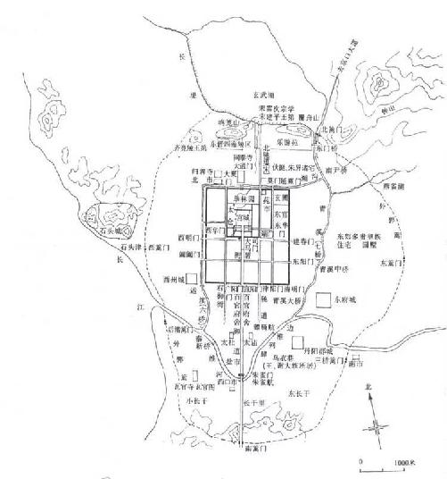
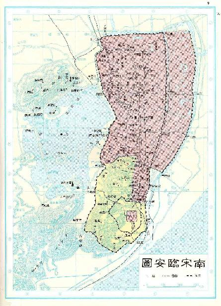
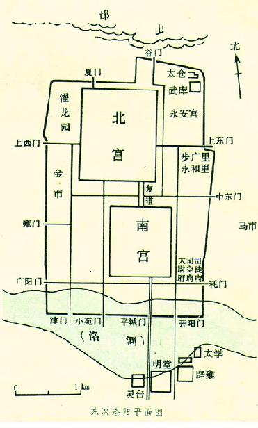
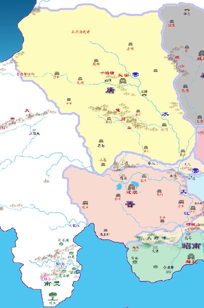
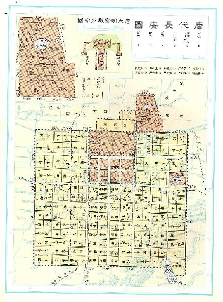
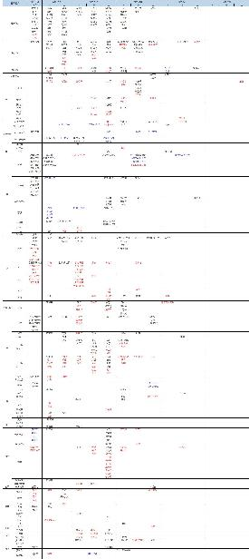
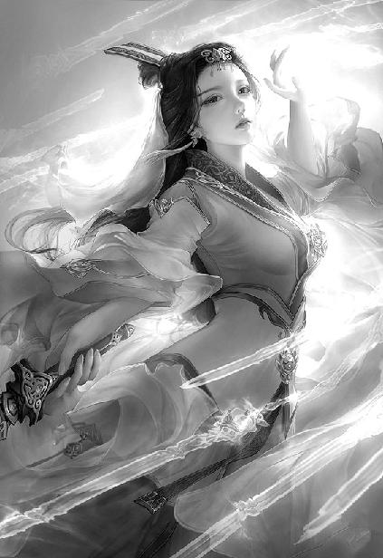

唐国篇
出版日期：
【本集内容简介】
※ ※ ※ ※ ※
寒风卷起飞雪呼啸而过，仙居殿的飞檐下，一排鎏金铜马随风摇荡，连绵不绝的‘叮当’声在雪夜中远远传开。
凭栏远眺，宫室楼台、山水林苑，此时都被掩盖在浓浓的夜色之下，实在不是看风景的好时候。程宗扬却靠在栏杆上，目光深邃地望着远方，似乎正看得入神。
风雪扑面，程宗扬长长吸了口气。冰凉的空气涌入肺中，心头却翻滚如沸，各种懊恼后悔翻腾不已，没有半点停歇。
自己当时怎么不一刀把那邪物给劈了呢？
自己刀都举起来了啊！只要一刀下去，就能除掉那邪物，永绝后患！
程宗扬拍了拍脑门，心里头隐约有个念想：好像这事谁说过些什么，自己这会儿想不起来了……
华丽而空旷的大殿内，恢复了盛年风姿的太皇太后仰身躺在洁白的月桂木盆中，玉体横陈，酥胸半露，凌乱的亵衣上沾满了未干的血迹。
战刀光芒乍起，闪电般照亮了她秀发上精美的凤冠。太皇太后娇靥上满是惊惶，那双美目却望向他胯下那片不可描述的部位，目光中流淌着蜜糖般的柔情，妩媚得仿佛要滴出水来。
“晚啦……”
她轻笑着说了一句，接着乌黑的秀发一根一根变得花白，白美的肌肤刹那间失去水分，变得干瘪苍老，细密的皱纹沿着眼角，在如玉的娇靥上悄然蔓延，就那样在他眼皮底下，变回老迈的模样。
急促而杂乱的脚步声在身后响起，即将登基的唐皇李炎领着一众近侍、大臣匆忙涌进大殿。高力士和仇士良一左一右随侍在侧，后面是卫国公李药师，宰相王铎、尚书左仆射严绶、尚书右仆射卢钧、礼部尚书李揆、户部侍郎刘瑑、左监门将军李珫……还有自己的老熟人，鸿胪寺少卿段文楚。
再往后是一群羽服道人，为首的便是长青宗大炼师赵归真。中间还夹杂着一名光头和尚，肥嘟嘟的胖脸上满是油光，这会儿也挤在人群间，伸长了脖子往里张望。
望着殿中的场面，所有人都像被定住一样，惊骇欲绝。
昏黄的灯光下，那位身为汉使的程侯披头散发，状如疯魔。他赤裸着上身，只在腰间围了一块半旧的帷帐，高举着一柄电光激射的长刀，正神色狰狞地往下斩去。
下方的浴盆内，身为唐国至尊的太皇太后郭氏惊惧交加，她衣衫不整，身上血迹斑斑，正举手挡着刀上的电光，哀声道：“饶命！莫要杀哀家……”
李炎瞠目而视，这是他认识的那位程侯吗？平日里笑闹无禁，脾气极好，怎么突然间凶性大发，竟然手持利器，悍然对老迈的太皇太后行凶？
旁边两位内侍，高力士和仇士良一胖一瘦，一个张口结舌，白粉粉的圆脸蛋上，红彤彤的嘴巴张得能塞进去俩鸭蛋；另一个目瞪口呆，眼睛瞪得铜铃一样，半张着嘴巴，一声‘卧槽’几乎脱口而出。
卫公倒还镇定，但神情严肃，握着笏板的手指已经攥紧。
赵归真趔趄着身子，一手按在胸口，大惊失色之下，险些牵动伤势，吐出血来。
信永两眼发直，脸上的油光已经化为油汗，‘吧嗒吧嗒’直往下掉。
周围的重臣无不骇然，一个假节的汉使，竟然当众挥刀，对垂垂老矣的太皇太后下手，这是要让汉唐两国不死不休，玉石俱焚吗？
众目睽睽之下，那程侯胸口和肩背的肌肉隆起，决绝地一刀斩下。
带着电光的刀锋落下，一片殷红刺目的鲜血匹练般飞溅而起，洒在残破的帷帐上。
“娘娘莫怕，有我程宗扬在此，绝不会让妖祟伤到娘娘！”
一声断喝响彻大殿，众人耳中脑中俱是一震，随即目光齐齐抬起，朝程侯手中望去。
赤身浴血的程侯握着一根斩断的粗藤高高举起，右手刀锋一指，声如雷霆地喝道：“李辅国以妖祟作乱宫禁！已经被我斩了！这就是他喂养妖祟的证据！”
他手中的藤条足有儿臂粗细，表面遍布着凸起的瘤结，色泽赤红如血，断口处血如泉涌，虽然已经被斩成两截，仍像怪蟒一样在他手中挣扎扭动，凶狞而又妖异。
众人齐齐顺着刀锋望去，这才注意到殿中铺着一片五彩的沙砾，犹如华丽的地毯一般。一具尸骸倒在沙砾间，看衣饰正是博陆郡王李辅国，只不过这位多年一类手执权柄，在唐国翻云覆雨的太监王，此时已经身首分离，肢体破碎，死得不能再死。
短暂的静默之后，殿中一片哗然。
太皇太后笑吟吟道：“多谢程侯。”说着目光玩味地在他胯下打了个转。
程宗扬死死盯着她，眼角不受控制地跳动几下，然后猛地转过身，扯住帷帐裹紧屁股，三步并做两步蹿到殿后。
干！躲在殿上吹风的程宗扬心里大骂一声。
李辅国处心积虑想要夺舍，自己跟杨妞儿等人拼死拼活，本以为他已经形魂俱灭，谁知他竟然成功夺舍太皇太后！
一个死太监已经够难对付了，如今又夺占了太皇太后的躯壳，口称懿旨，万民敬仰，连未来的皇帝都要恭顺奉养，以尽孝道，这还怎么玩？
当时自己一刀下去，一了百了，还用得着现在这样提心吊胆，坐立不安吗？
但话说回来，如果自己真要一时冲动，当着李炎和满朝文武的面，把太皇太后给劈了，痛快是痛快了，可唐国上下当场就要疯，有一个算一个，都得跟自己玩命。
你说夺舍，有证据吗？
合着太皇太后跟李辅国都被你砍了，你说什么就是什么是吧？
没有证据，任自己说破大天也是白搭。反而是自己在众目睽睽之下手刃太皇太后，铁证如山，到时候李炎得头一个上，剩下的谁都跑不了，不上来拼个你死我活，绝对收不了场，连卫公都保不了自己。
要不要索性跑了算球？自己带上家眷兄弟，拍拍屁股就走，就算将来李辅国妖性大发，借着太皇太后的躯体兴风作浪，把大明宫变成恶鬼噬人的魔窟，整个长安城都化为尸山血海，关自己屁事！
自己躲回舞都，高筑墙，广积粮，就不信老妖李喇嘛能隔着云水和汉唐的国界，把魔掌伸到自己老窝里。
程宗扬心头激荡，一时间真有拔腿就走的冲动。
随即他又拍了拍脑门。风头不对就打退堂鼓，这算自己的老毛病了。三十六计，自己也不能光逮着一个上计往死里用吧？
自己跑了，杨妞儿怎么办？跟着自己一起跑？
也行吧。
那李炎呢？
他跟自己混的挺好，要不要跟他说一声，也一起跑？
好吧，大唐的皇帝都跟自己跑了，唐国不如改名叫博陆李辅国得了。
胡思乱想中，夜空传来几声长长的鹤唳。
那是仙居殿饲养的仙鹤。半夜时分，殿中突然涌来一群陌生的不速之客，又没有了看管的控鹤人，这些仙鹤受了惊吓，纷纷飞走，但又不敢远离，只在仙居殿上空徘徊。
鹤唳声让程宗扬冷静下来。
怎么可能一走了之？人都没找齐呢。
自己此行的目标卓美人儿，至今不见踪影。更别说还有死丫头，一去杳无音信，想起来就揪心。还有泉奴，莫名断了联络，下落不明。还有蛇奴和罂奴，人应该已经回来了，但自己连面还没见着……
更何况面对着李辅国这个邪物！自己怎么可能坐视不理？
先不说利益得失，自己良心都过不去！
程宗扬脸色难看地摸了摸胸口。
良心这玩意儿真不是好东西！为了能让它安分点儿，自己就得冒生死之险。
可太他娘的奢侈了！
程宗扬长长叹了口气，事到如今，只能硬着头皮上了。
身后脚步声响，白霓裳捧着一叠衣物过来，“好不容易才找到的，你先穿着吧。”
与李辅国一场恶斗，程宗扬倒是没受什么伤，可衣服打没了。从老太监的曼荼罗幻境出来时，干脆是光着膀子。
紧接着又是前后两场大战，先战齐羽仙，再战鱼玄机，战到裤子都没了。
李炎带着唐国一帮重臣赶来时，自己要不是撕了块帷帐遮羞，脸可丢大了。
因此揭穿李辅国的阴谋之后，程宗扬便麻利地滚了出来。
毕竟就算脸皮再厚，他也不好意思光屁股包片儿帷帐，跟唐国未来的皇帝和一帮朱紫大臣们冠冕堂皇地肃然相对，共商国是。
可惜大明宫万物俱备，唯独一样东西少得可怜：男装。
整个大明宫日常居住数万人，理论上只有一个男人：皇帝。
宫里除了女装，就是太监的衣物，至于拿皇帝的御衣来穿——自己还是光着算了。
白霓裳当然不会犯这种错，仓促间，她只找了几件内衣，唯一一件外衣，还是高智商脱下来孝敬给师傅的。
内衣还好，是尚衣监新做的，虽然是太监用的，多少有些晦气，但还能忍，穿在里面也看不出来，可那件外衣怎么穿怎么别扭。
“你找吕小子的也行啊，”程宗扬一边穿一边抱怨道：“高智商那体型，我穿着合适吗？算了，凑合吧。”
“程郎穿什么都好看。”白霓裳笑道：“我倒是奇怪，你裤子怎么也掉在殿里了？”
程宗扬赶紧道：“东西找到了吗？”
“呶。”白霓裳递来那对铁球。
程宗扬松了口气。这也许是自己此行最大的收获了，一个特殊的空间。虽然仓促之下，无暇细看，但光是噬血藤元种，就已经值回票价了。
触手系啊，没想到自己还能得到这种东西。六朝这个世界的生物多样性，还真是令人充满惊喜呢。
程宗扬收起铁球，一边问道：“吕雉呢？见到她了吗？”
“没有呢。”
奇怪，她飞哪儿去了？要是别人，还可能迷路了，她一个能飞的，总不至于也迷路吧？
要命的大事一件接着一件，程宗扬也顾不得多想。他穿好衣物，收拾停当，“下面还在闹吗？”
“还闹着呢。”白霓裳笑道：“那些大男人可真厉害，就跟演戏一样，说哭就哭，说跳就跳，一个个捶胸顿足，声泪俱下的，发誓跟李辅国势不两立。”
“我去看看。”程宗扬打定主意兵来将挡，水来土掩，当下不再犹豫，起身往殿中走去。
白霓裳喜滋滋地跟上来，紧紧搂住他的手臂，整个人几乎都贴在他身上。
玉人在侧，呵气如兰，那种香艳软弹的触感，让程宗扬当场就迈不开步了。
高智商这小兔崽子衣裳也太短了，连腰都遮不住！瞧瞧，下面顶得跟帐篷一样！还怎么走路？
自己这么硬挺着下去，那可是当着唐国君臣的面，活活把脸都丢尽了。
这么下去也不是个事，程宗扬一时间满心冲动，不如索性跟小白来一发！好几天没上她了，还挺想的……
总算刚开过两个苞，理智尚存，程宗扬按捺住翻腾的欲火，提醒道：“这样不好吧？下面好多人呢，还有你们道门的。”
“那有什么？反正我是你的女人。”白霓裳娇美的玉颊贴在他肩侧，像小猫咪一样亲昵地磨蹭着，“人家都跟你睡过了。”
你这是在玩火啊！要不是李辅国阴魂未散，太皇太后和整个大唐还等着我去拯救，我这会儿就把你办了！
“还有正事呢，潘姊儿跟燕仙师随时可能过来，你去接一下。”程宗扬捏了捏她的屁股，哄劝道：“听话。”
白霓裳嘟起小嘴，“好吧。”
仙居殿内，原本昏暗的宫室此时银灯高照，映出众人形形色色的面容。
太皇太后郭氏惊吓过甚，由高力士服侍着，去了后面的寝宫休息。
大殿中央那处曼荼罗坛城和李辅国的尸骸，已经用帷帐围了起来。
一众内侍、外臣都聚在殿中，面对李辅国妖祟后宫的铁证，有的激昂慷慨，有的义愤填膺，有的痛哭流涕，有的喜不自胜，还有的失魂落魄。
程宗扬一眼扫去，赶到宫中的大臣已有数十位之多，其中不少都是自己在宣平坊的街坊。近水楼台先得月，有自己这个深入棋盘的搅局者，街坊邻居们得到消息，乃至通行速度都快了一筹。
殿中最激昂慷慨的是尚书左仆射严绶，他双目红肿，显然刚才大哭过一场，此时正仆地向李炎陈辞，请立刻禠夺逆贼李辅国王爵，收其家眷，穷治其党羽。
程宗扬暗暗撇嘴。唐国大臣没有哪个不与宦官勾结的，而严绶绝对属于和宦官勾结最深的那一批。其人才具平平，能当上尚书左仆射，无非是早早投靠了宦官，对李辅国大表忠心。这会儿风向一变，说跳船就跳船，丝毫不带含糊的。
李炎双手按膝，腰背挺得笔直，虽然眉头紧锁，神情凝重，但年轻英锐的面孔上，已经有了帝王的威仪。
一名身着戎装，结着英雄巾的武者立在他身后，一副赤胆忠心之态，却是来自大弁韩的周少主。他背着长枪，紧守着未来的唐国皇帝寸步不离，不时作顾盼自雄状。
他怎么跑这儿来了？程宗扬心下嘀咕，四下张望一眼，却没看到黎锦香。
这边严绶话音刚落，旁边几名大臣迫不及待地竞相开口，纷纷请求收回李辅国的御赐姓名，将其余孽一网打尽，严惩不贷，以儆效尤！
卢钧和郑余庆等几位宦海沉浮多年的大臣明显要老成一些，略略错后一个身位，持笏而立，眼观鼻，鼻观心，一言不发。
宰相王铎出身世族，风姿极佳，王涯、李训等人被杀，他如今已是朝中仅存的宰执重臣，但此时地位颇有些尴尬。毕竟他是先帝擢拔的宰相，与江王殊无瓜葛。所谓一朝天子一朝臣，如今新君即位，自然要遴选新人，他这样的前朝重臣通常会被授为山陵使，借由为先帝治丧的名义，体面出局。因此也只躬身聆听，闭口不言。
段文楚作为鸿胪寺少卿，官职在殿中根本不够看，他又非是钻营之人，三两下被挤到圈子之外，此时背靠着蟠龙柱，两眼望天，一脸的生无可恋。朝廷动荡至此，唐国的大臣们仍在蝇营狗苟，怎教人不心丧若死？
“周卿，你看呢？”李炎开口说道。
周飞险些应声，旋即意识到自己的身份根本不配在这种场合张口，赶紧挺了挺胸，站得更直了一些。
旁边三名官员形成一个小圈子，游离于众人之外，其余大臣对他们虽然态度客气，却毫不亲近，颇有些敬鬼神而远之的意味。
为首一名方面大耳的官员闻声上前，语调铿锵地说道：“臣以为，李辅国祸乱宫中，骇人听闻，当收其党徒入狱，严加审勘！”
李炎点了点头，然后道：“来卿？”
另一名细眼薄腮的官员躬身道：“周推事所言极是。臣以为，当兴大狱！”
两人话虽不多，但杀气腾腾，群臣无不凛然，严绶等人更是冷汗迭出，大气也不敢喘一口。
程宗扬忽然反应过来，这两位就是只闻其名，未见其人，在长安声名赫赫的推事院两位主官：周兴、来俊臣。皇帝的鹰犬和屠刀。
他看了眼第三位没有出声的官员，正是那位胡人推事，索元礼。
嚯，能让这三位一同出手，李辅国的义子义孙们这是几辈子修来的福气？祖坟都冒黑烟了……
李炎忽然站起身，紧锁的眉头舒展开来，笑道：“程侯。”
衣物不合身，程宗扬也只当自己不尴尬，他阔步上前，抬手道：“外臣见过陛下。”
李炎双手一托，阻止他躬身下拜，口中说道：“免礼！”顺势上前握住他的手腕，紧绷的手指微微战栗。只有这一刻，才流露出压抑的紧张与兴奋。
“方才赵炼师等人已然验看过，程侯斩杀的邪物，正是李辅国那奸贼以妖法豢养。”李炎心有余悸地说道：“若非程侯坚忍勇决，不避生死，竟被此贼挟持皇祖母，我等皆是罪人。”
“都是陛下洪福齐天，还有杨公主舍生忘死，外臣只不过是侥幸而已。”
李炎愤然道：“此贼蛇虺成性，为了挟持皇祖母，竟将仙居殿的宫人屠戮一空，如此凶残暴戾，简直是丧心病狂！”
程宗扬此时却是心有所悟，自己在蓬莱岛上看到的尸横遍地，真未必是李辅国毫无意义地以杀戮为快。将仙居殿的宫人内侍尽数杀绝，他才好放心地夺舍太皇太后，以免被身边人看出破绽。
只能说李辅国确实处心积虑，一开始定下的夺舍目标就是太皇太后。可李辅国夺舍太皇太后这种事，过于骇人听闻，当着群臣的面，实在不好公然说出来。
别说自己口说无凭，就算是证据确凿，李炎能怎么办？难道还能把太皇太后给杀了？这可是弑亲弑祖，一旦传扬出去，他的皇帝也不用当了。就算要干，也只能私下秘议。
“卫公呢？”程宗扬打算还是先找几个靠谱的人，商量周全再说。
李炎环顾左右，仇士良连忙道：“方才去了后殿。太皇太后身边无人，卫公也是放心不下。”
后殿是太皇太后的寝宫，外臣不得擅入。但现在显然不是平常时候。李炎点头道：“卫公思虑周详。”
程宗扬心头一动，卫公去了太皇太后的寝宫？是觉察了什么吗？再看周围，杨妞儿也不在？
他正琢磨也过去看看，李炎已经吩咐道：“来人！给程侯设座。”
程宗扬只好闭嘴。自己一个外臣，即使刚救过太皇太后，也不好主动开口要求进寝宫。
有卫公在，总不至于出什么岔子吧？程宗扬正想着，周飞已经飞快地搬了座椅过来，投来的眼神中，除了感激，便是满满的敬畏。
程宗扬心下暗暗感慨，即使再狂妄自负，毕竟只是江湖人而已。斗然踏入宫禁，接触到朝廷最有权势的一堆大人物，这位周少主已经自觉地以属卫自居，甚至以此为荣，哪里还有半点儿以往的自高自大？
没等周飞献上殷勤，仇士良已经主动上前接过座椅，亲手放在御座下首。
程宗扬笑道：“仇公公辛苦。”
仇士良眼圈一红，陪笑道：“小的哪里辛苦？倒是程侯，诛杀李辅国，不仅救下太皇太后，也救下我们这些奴才一条小命。”
程宗扬笑道：“我辛苦，你也不容易。”
仇士良心里此时是五味杂陈。
当初看到地上那具被大卸八块的尸体，他高兴得差点儿抽过去。李辅国这老东西！总算是死了！
这可是普天同庆的大好事啊！仇士良心花怒放，恨不能掏钱给程侯立个碑，好好表达一下自己的感激之情。
但最初的狂喜之后，接踵而来的危机感使他如芒在背。
看看这帮激昂慷慨的大臣吧，哪个没受过王爷的恩惠？哪个没拍过王爷的马屁？哪个没有在王爷面前表过忠心？
尚书左仆射严绶，庸碌无能，在地方当了多年的微末小官，攀上王爷之后，突然变得功绩卓著，一路加官晋爵，各种功劳、誉望雪片般把他堆到金紫重臣，受封郑国公。这会儿说翻脸就翻脸，落井下石比谁都快！
李揆，国子祭酒，礼部尚书。热衷名利，素无德行。以往见到王爷，必以父相称，王爷见其孝顺，多有爱护。这回朝局变动，王爷已将其内定为宰相，而此时第一个主张诛杀王爷满门的就是他……
今日是李辅国，明日若是我仇士良呢？
今天李辅国被大卸八块，明天我仇士良会不会五马分尸呢？
有朝一日轮到自己，下场绝不会比王爷更好！
一念至此，仇士良像是被兜头泼了盆了凉水，满心的喜庆都变成了深深的忧惧。
能不怕吗？连一手遮天的王爷都落得如此下场，自己还能落得好？
大唐六年四帝，这眼看着第五位皇帝就要登基了。朝局如何，他们心里就没点儿数？王爷能把大唐这烂摊子维持住，容易吗？唐国乱成这样都没散了摊子，王爷就算没有功劳也有苦劳啊！
仇士良越听越不是滋味，有心替王爷分辩两句，但群议汹汹，自己一张口，便是众矢之的，当场就要被这帮急于表忠心的文臣们当成猎物撕咬。
仇士良把嘴边的话悄悄咽了回去，头一低，只当听不到，可心里七上八下，唯恐有人把矛头对准自己。
正忧惧间，程侯一句辛苦，让他眼泪几乎淌出来。自己辛苦吗？那是真辛苦啊。江王入宫，自己可是头一个接的驾，光在紫宸殿就跪了半宿，心中的煎熬没有片刻消停。一面担心没奉承好未来的皇帝，将来被弃若敝屣。一面又怕自己办事不力，被王爷借机立威，杀自己这鸡给江王这新来的猴子看。动辄得咎，患得患失，还没办法对人说。
人家程侯什么身份？而且还有擎天保驾的功劳！也就是他身为外臣，不好封赏，否则拥立之功，救驾之功，除奸之功，三件大功，再加上太真公主未来的夫婿，议亲议贵议功，妥妥一个王爵！还得是亲王。
这会儿满殿都是见风使舵的高手，他亲口道一声辛苦，对自己的攻讦起码会少一半！
李炎年轻英锐，群臣议事，根本没想过回避程侯这个外臣。反而觉得有他在侧，更加安心，当下问道：“仇卿，你的意思呢？”
仇士良怔了一下，随即扑地叩首，尖声说道：“主子圣明！奴才是主子的走狗，主子的吩咐就是奴才遵奉的圣旨，丝毫不敢有违。”
李炎笑骂道：“让你出主意呢，你倒好，光顾着拍马屁了。”
此言一出，仇士良心下长出了一口气，浑身骨头都轻了四两。挨骂好啊，挨骂说明亲近！就怕圣上对自己客客气气，转脸就砍了自己的脑袋。
仇士良谀笑道：“奴才这点儿微末见识，怎比得了诸位满腹经纶的大臣？说出来只会让人笑话。”
“说吧。我听听。”
“奴才遵旨。”仇士良也不起身，就那么趴在地上道：“奴才在旁听着，诸位大臣都说得极是！李辅国祸乱宫廷，该杀！如今被程侯斩了，倒是便宜了他！以他的罪过，挫骨扬灰也不为过！只是陛下知道，李逆子孙众多，还掌管着神策军，万一……万一出了兵变，恐怕惊扰陛下。”
李炎面色一沉，“兵变？”
“荒唐！”
“大胆！”
群臣立刻痛喝出声，李揆怒斥道：“一派胡言！圣上恩泽四海，大唐军民百姓，无不心向陛下！”
严绶捻须道：“神策军乃皇上亲军，深受皇上恩典，如何会作乱？”
更有人叫道：“莫非有人唆使？”
神策军一向由宦官掌控，有人唆使还能是谁？要是换作平时，被人这般含沙射影，血口喷人，仇士良早就挽起袖子喷过去了。可此时殿内一堆大臣，有分量的太监就自己一个，李王死了，老鱼不在，王守澄那狗东西都成渣了，孤掌难鸣啊。
“呯！”
仇士良一个头磕在地上，不敢再作声。
李炎盯着他的后脑勺，殿内的喝斥声渐渐低沉下去。
程宗扬没把他们的表演放在心上，只侧耳听着后面的动静。
后面寝宫静悄悄的，不知道卫公是否已经跟夺舍了太皇太后的李辅国对上？以卫公的眼力，不会被李辅国瞒过吧？
当时他握着笏板的手掌青筋暴起，是想阻止自己，还是看出端倪？意识到太皇太后的躯壳下，已经换了人？
杨妞儿也不在，是不是也去了后殿？她与太皇太后更熟稔，李喇嘛这狼外婆能瞒得过自小就耳聪目明的杨妞儿吗？
程宗扬心里七上八下，眼看脱身不得，索性心一横，催动真气。
丹田内，一颗赤红的种子静悄悄悬浮在气海中央。随着真气催动，飞檐下的阴影中，一根细如手指的藤蔓活物般蜿蜒伸出，往殿后探去。
可惜，噬血藤只探出不远，就到了极限。
程宗扬一边尝试，一边仔细感应，自己能催动的距离将近十丈，大致能覆盖仙居殿。但很明显，噬血藤还大有潜力，只是自己的修为不足以支撑。同时也是刚得到噬血藤元种，还有些生疏，熟练之后，范围能更大一些。
噬血藤的本体似乎处于一个未知的空间中，通过催动丹田内的元种，藤身可以在自己能够控制的范围内任意出没。
伸出的藤蔓，就像自己身体的一部分，不仅灵活得如同手指，还能清晰感应到环境的温度和空气的流动，甚至物体的颜色和响动。这比如臂使指还要更进一步，就像是自己的意识大幅扩张，将整个仙居殿都笼罩在自己的感应范围之内。
不过限于自己的注意力，全神贯注才能感应小范围的环境，就像正常人平常也不会时时刻刻在意手指的触觉，舌头在嘴巴里的位置等等细节。
至于齐羽仙和鱼玄机，自己早已把她们移到殿外，绑得跟粽子一样，藏在斗拱处。两女精血被噬血藤吸食，再无反抗之力，被血藤一缠，便昏昏沉沉，丝毫挣扎不得。有趣的是，自己还能通过血藤感受到她们肌肤的光滑和柔嫩……
一念至此，就仿佛被一颗火星引爆，刚刚强压下去的欲火猛然高炽。
旁边是唐国君臣奏对，程宗扬却满心绮念，性欲勃发，胯下坚硬如铁。
他不禁后悔，早知道自己就不来殿中，先跟小白在上面做过一场，也不至于这会儿坐在椅中，连站都站不起来。
肌肤滑弹的触感通过藤身不断传来，程宗扬心头越发激荡，虽然隔着大殿，但噬血藤的感应如此敏锐，不就相当于自己身体的一部分吗？也许自己可以……
忽然间背后一凉，一股寒意从尾椎直蹿后脑勺！
不对！
这里面有些东西不对！
程宗扬猛然警觉过来，自己就算再荒唐，也应该有个限度！
当时太皇太后生死未卜，吕处女突然飞走，殿中妖邪的曼荼罗坛城，外加一具碎成几块的尸骸，这种鬼气森森的环境里，自己居然还硬得起来？
当时的情形，无论怎么谨慎都不为过，自己怎么会突然间欲念大发，搞了人家处女不说，还一口气搞了两个？
何况一个齐羽仙就足以让自己如临大敌，而另一个鱼玄机被鱼朝恩当成眼珠子一般，自己跟鱼朝恩又正在合作，怎么当时就鬼迷了心窍一样，一门心思给她开苞，还强迫她以屈辱的姿态主动献出处女？
自己什么时候对女人这么变态了？何况还是自己平时不愿轻易招惹的处女？
自己什么时候这么容易就突破底线，变得肆无忌惮，恣意妄为？
自己什么时候这么鲁莽了？被欲望驱使着，丝毫没想过后果？
程宗扬冷汗潺潺而下。
什么时候呢？
自己无意中捡到那对铁球，无意中进入铁球中的空间，无意中找到那颗噬血藤元种，然后下意识中就掌握了驱使噬血藤的能力，又恰好发现两个被噬血藤所制，无法反抗的处女……
一切都是从那对铁球开始，而那对铁球一直被李辅国握在手中。直到他肉身被斩，被自己‘无意中’捡到。
如果没有这对铁球，自己不会轻易就发现齐羽仙和鱼玄机，不会随即就欲火攻心，更不会把心思完全放在她们的肉体上，而忽略了另一边的动静。
如果自己及时发现浴盆中的异动，李辅国还能轻易夺舍吗？
自己催动噬血藤，却无法逼近已经夺舍的李辅国，李辅国说因为他是旧主。
放屁！他所说的旧主已经被大卸八块，肉身已经不复存在，噬血藤如果能感应到旧主，只可能是魂魄所系，而李辅国的魂魄一直都在！
干！
程宗扬心里大骂一声，他终于想到自己一直没记起来的那件事——老贾临行时特意叮嘱过：斩杀太皇太后！
自己竟然忘了个干净！
无论是那对被遗弃的铁球，还是处于‘无主’状态的噬血藤，还是那两个无力反抗，任人鱼肉的处女，这一切都是圈套，是李辅国为了夺舍抛出来的诱饵，偏生自己一个不落吃了个干净！
程宗扬霍然站起身。
正在吵嚷的群臣齐齐噤声，无数诧异的目光同时投来，望向这位突然失态的程侯。
李炎也看了过来，眼中更多的是纳闷。
程宗扬刚要张口，外面传来一阵兵甲声，似乎有大队人马正在靠近。
殿中众人也听到动静，不禁相顾骇然。
众目睽睽之下，那位程侯此时又镇定下来，不动声色地拂衣坐下。
李炎心下暗暗佩服，不愧是自家姑姑相中的男人，满殿喧嚷间，仍然眼观六路，耳听八方，果然不凡！
殿外有人尖声叫道：“神策军护军中尉霍仙鸣，奉命平叛！江王殿下可在此处！”
众人悚然而惊。这可是李辅国的心腹，周兴和来俊臣如果兴起大狱，罗织乱党，姓霍这厮铁定是数一数二的头目。
当着君王的面，众人义愤填膺，这会儿乱党头目兵临城下，方才跳得最欢的几个反而静若处子，低下头一言不发，连呼吸都乖巧地收敛起来。
“李王何在！”霍仙鸣扬声道：“请王爷出来说话！”
殿外有人喝道：“圣上在此，勿得喧哗！退下！”
“王忠嗣！”霍仙鸣叫道：“你区区一个千牛备身，也敢来阻我！儿郎们！将他拿下！”
“好你个罗士信！居然敢拔刀！”
“苏定方！别以为你刚得了仇士良的九花虬，就能在此嚣张！”
殿外叫嚷不绝，一时间剑拔弩张，大战一触即发。
李炎手指紧紧握着扶手，外面兵甲声越来越密集，其数不下千人，显然是神策军主力赶来此地。苏定方、罗士信、王忠嗣等人再武勇，不过区区数人，怎么可能挡住这些宦官一手掌控的精锐？
仇士良再跪不住，他顿首告了声罪，连滚带爬地蹿到殿外。
“霍仙鸣！你给我闭嘴！”
殿外静了一瞬，作为太监中的头面人物，名列一王四公的仇士良在宦官中的威信还是很高的。有他出面，宦官们都纷纷闭了嘴。
仇士良镇住场子，尖声道：“乱嚷嚷什么？宫里的规矩都忘了？小霍子，看清楚这是什么地方了吗？太皇太皇太后的寝宫！你给我滚过来！”
霍仙鸣脸色数变，想要撕破脸跟仇士良对上，还未曾开口，肘侧身后便是一紧，被几名同伴们推搡着上前，暗示服软。
霍仙鸣也是无奈，没王爷撑腰，自己面对仇士良这种资深大佬，终究还是底气不足，此时被众人拱到前头，只好叉手道：“仇公公，都是小的一时心急，并非有意冒犯。”
“圣上和太皇太后都在此，你一个奴才有什么好急的？”仇士良劈头盖脸地喝斥道：“王爷当年怎么教诲你们的？还讲不讲规矩了？”
正教训间，程元振从人群中出来，拱手道：“仇公公，眼下到底是个什么情形？王爷呢？”
“宫里出了点事。”仇士良顿了一下，“你们几个，进来说话。”
程元振与霍仙鸣飞快地交换了一个眼色。宫闱之中，不能外传的秘辛那可太多了，仇士良此言，显然是殿中之事不能公诸于众。
但万一是陷阱呢？进去几个核心人物，然后一网成擒，这种事也不是没发生过啊。
犹疑间，程元振上前说道：“便是小的吧。”然后回身招呼几名有头脸的太监，“大伙儿一起。”
霍仙鸣脸色阴晴不定，在外面固然安全，可万一王爷那边真有事，自己凑不到跟前，可平白错过在王爷面前露脸的机会。况且自己今日的事办得不利落，不知有多少人盯着，万一被人趁机在王爷跟前下蛆，自己失宠了怎么办？
眼看众人便要进殿，霍仙鸣急忙叫道：“等等！我也去！”
一群太监涌进殿内，群臣本能地露出惧色。方才还在对着仇士良大喷特喷的李揆连退数步，钻进人群不再露头。严绶大袖一举，躬身深施一礼，态度恭敬万分。
霍仙鸣胆气立壮，对那帮大臣理都不理，大模大样地直趋殿中，对着坐在榻上的李炎拱手道：“江王……”
还未说完，程元振已经抢先拜倒，高声道：“奴才叩见圣上。圣上万岁万岁万万岁！”
霍仙鸣呆在原地，只见同僚纷纷拜倒，才仓促跪地。
仇士良心下冷笑，靠着李辅国羽翼的遮蔽，霍仙鸣等人在宫中横行多年，早养成目中无人的跋扈性子，如今斗然得登高位，兵权在手，更是气焰嚣张，还以为面前是那个在十六王宅斗鸡走马的闲人亲王呢！
众宦官一边磕头，一边心下纳闷，李炎并非正坐，而是坐在殿上西侧，面朝东。殿中一大片场地被帷帐遮起，不知所以，众人都是一头雾水。此时虽然没见到李辅国，但都知道李炎的新君之位是王爷点过头的，有程元振带头，于是跟着山呼万岁，行礼如仪。
李炎心头紧绷，面上却不露声色，努力做出帝王威严，微微抬手道：“众卿平身。”
众宦官纷纷谢恩，然后各自起身。
就在这时，帷帐分开，一行人从帐中出来，为首的羽服高冠，正是长青宗大炼师赵归真。后面是道门诸人与信永，让程宗扬没想到的是，徐君房和袁天罡居然也混在里面。
赵归真郑重向李炎施了一礼，“启奏陛下。臣与诸宗同道已经验看过，此间所留痕迹，确系邪法。只是事关佛门，其中详情，还请信永大师为陛下解说。”
一群羽服道人中间，身披袈裟的信永分外引人注目，只是大冷的天，他胖乎乎的脸上却挂满了黄豆大的汗珠，也不知刚才在帐内见到了什么。
唐国佛门地位尊崇，如窥基这样的国师，帝王私下相见，尚且向其敬拜。但信永丝毫没有身为高僧的觉悟，他一拂袈裟，双膝跪地，合什道：“沙门信永，叩见君上。”
李炎道：“久闻信永大师精通佛法，是长安闻名的有德高僧。今日之事，还请大师直言。”
“贫僧遵旨。”
信永起身时悄悄瞟了程宗扬一眼，程宗扬递给他一个鼓励的眼神。
信永乱跳的心头顿时一阵安定。菩萨哥连李郡王都搞死了，自己还怕个鸟！
“回陛下。殿中布列的沙砾，非是大乘显宗所传。小僧见识短浅，勉强能辨认系出密宗一脉的曼荼罗。密宗称，曼荼罗乃一切功德所在，密宗本尊及眷众聚集之地，信众设曼荼罗供养，可积聚福德，智慧圆满……”
信永双手合什，眼睛盯着指尖，一脸的庄重，其实一直用余光打量着那位世间君王的下巴。眼见他下唇微微抿紧，流露出一丝不耐烦，立刻口风一换，改用通俗易懂的市井言语说道：“……就是密宗供养本尊神明的。”
李炎道：“他为何要用沙子在太皇太后的寝宫布设此物？”
“回陛下，小僧修的是禅宗，密宗呢，又是佛门中的密传，故称密宗。有道是隔行如隔山，里头的关窍，小僧也不敢说明白。只是听说这曼荼罗极易召来魔王。密宗的那些喇嘛们用沙子绘制曼荼罗来修行秘法，修完赶紧毁掉，就是怕被魔王侵入。”
李炎微微倾过身，沉声道：“你是说，李辅国那厮用曼荼罗修行秘法，无意中召来了魔王？”
仇士良早知端倪，此时一脸沉痛。程元振、霍仙鸣等人不禁脸色大变，相顾失色。
王爷在仙居殿作法？还入了魔？
道门诸人用眼神交流半晌，赵归真毅然上前，“陛下，贫道观此佛门痕迹，构思极为用心。”
李炎按着扶手道：“赵炼师，请直说。”
“回陛下。”赵归真俯首道：“以贫道之见，此佛门之物分明是有人刻意为之，专为接引魔神，祸乱宫廷！”
这就不是无意之过，而是有意为之。
李炎冷冷道：“信永大师，你说呢？”
“陛下明鉴啊，小僧可不是为此贼开脱。”信永匆忙说道：“无论有意还是无意，那人私下在宫中作法，便是罪过，实打实的居心叵测，其心可诛，罪不可恕！”
“陛下！”赵归真道：“前日方有窥基堕入魔道，如今又有博陆郡王接引魔神。恰逢先帝升云之日，宫中妖祟肆虐，只怕非是一日之功。”
赵归真步步紧逼，只差没指着信永的鼻子大骂佛门尽是些披着袈裟的魔头，居心叵测，将唐国搞得邪祟丛生，甚至牵连到皇帝驾崩的罪过。
话说回来，李辅国留下的曼荼罗与佛门脱不了干系，也怨不得赵归真等人逮住机会揪住佛门不放，毕竟能攻讦佛门的机会可不多，若是坐失良机，只怕下来之后，道门诸宗该轮番指着赵归真的鼻子唾骂。
只可怜信永被夹在其间，一面痛斥李辅国借着佛法作恶，坚决表明立场，一面竭力维护佛门尊严，左支右绌，捉襟见肘，也是难为了他。
趁众人注意力都在双方的争论上，徐君房和袁天罡悄没声地凑了过来。
程宗扬坐在椅中，上身微微后仰。徐君房躲在椅后，小声道：“里头的坛城被破坏了，除了李辅国的尸骸，什么都没找到。”
这在意料之中，毕竟自己也找过，就剩下那对铁球，还被自己捡走了。
也就是说，赵归真等人其实没什么证据，只能拿曼荼罗来说事。
袁天罡道：“那截触手是你砍掉的？我测量了一下，有0.79米，它的本体应该很大。”
噬血藤的本体有多大，程宗扬心里也没数。自己驱使的只是一颗种子，指尖大小而已。
“它的本体呢？”袁天罡倒是挺上心，小声道：“逃跑了？还是消失了？”
“消失了。”
“可惜。”
“怎么了？”
“它的结构很奇特，有典型的动物和植物的特征，还具有真菌的丝状分支结构，最奇特的是，它的残骸还呈现出阿米巴虫的特性……”
“什么意思？”
“就是说，它外表看似藤蔓类的植物，其实是一种动物，一部分又是丝状体的真菌，同时还具备变形能力。”袁天罡贴到他耳边，兴奋地说道：“逮住它，做成标本，整个生物学都被颠覆了！”
干！你个科学家！我刚捡的好玩意儿，你就想做成标本？
袁天罡再说什么，程宗扬只当没听到。至于赵归真和信永的争辩，更是左耳朵进右耳朵出，置若罔闻，心神都放在那颗噬血藤元种上。
这东西既是动物，又是植物和真菌，还是阿米巴原虫？怪不得像藤蔓，又能吸血，还能拉丝分裂，像阿米巴一样变形，这是什么神奇物种？
程宗扬越想越觉得奇怪，自己当时找到这颗元种，几乎刚一接触，就本能地掌握了操纵它的能力。这一步就跨得很神奇了，莫非它还有强大的人工智能，直接把操作说明打包输入到自己的意识里？
自己应该说还是个谨慎人，怎么对它一点戒备都没有，直接拿来就用了呢？
哦，程宗扬一想就记起来了。自己刚拿到噬血藤元种，立马发现两个已经被它控制的猎物：齐羽仙和鱼玄机。
后面就简单了，除了那俩，自己压根儿就没往别处想。
程宗扬觉得，这不能说明自己一看到两个沦为猎物的女人就丧失理智了。换任何一个正常的男人，那会儿也看不到别的了。
这会儿冷静下来，程宗扬越想越是蹊跷。这么神奇的物品，自己捡得也太容易了，就好像有人铺好路，专门送到自己手上。
而自己果然上了钩，被它引开注意力，一门心思都放在了齐羽仙和鱼玄机身上。再深一步想，齐羽仙和鱼玄机的反应也有些蹊跷。齐姊儿还好一些，多少也算跳弹了两下，鱼玄机可就太过不堪了，如同被吓破胆一样魂不守舍，在自己的淫威之下没有半点挣扎，被自己任意捏扁揉圆，跟她风流女冠的名号大相径庭。
如果都是李辅国捣的鬼，这一切倒是能解释。
可他真有操纵人心的能力吗？
不可能！
他顶多只是引导，对原有的情绪进行放大。比如鱼玄机潜意识中对岳鸟人的恐惧，比如自己……
啊呸！自己才没有那么好色！更不会色令智昏！以自己堪比圣人般高尚的道德节操，怎么可能像人形泰迪一样，稍一撩拨，就狂暴发情？
这不是引导，而是误导！绝对的！
程宗扬不停转着念头。另一边，信永在争辩中越来越落在下风。
殿中的曼荼罗证据确凿，李辅国尸骸俱存，就算信永舌头上能吐出莲花来，也不可能把黑的说成白的。况且小永以前也跟自己私下吐槽过蕃密的邪异，这会儿也不可能昧着良心给蕃密洗白，只能支支吾吾，勉强应对。
李炎面色不善地盯着信永。自家姑姑最讨厌的就是光头，果然有先见之明！
那肥厮脸上的汗珠滚滚而下，都顾不得去擦，一副笨嘴拙舌，心虚气短的废物模样……
他忽然开口道：“你为何会在宫里？谁召你来的？何时入的宫？”
正被道门穷追猛打的信永一时间张口结舌。自己为何会在宫里？这就说来话长了，起码得从仇士良仅剩的独苗少了一个蛋说起……
“陛下，”程宗扬开口道：“信永大师是被收监的，才放出来不久。”
“坐牢的和尚？”李炎愈发不屑，“犯了什么罪？”
“因涉嫌包庇李训，被逮入金吾仗院。”
“哦……”李炎点了点头，脸色稍霁，这事他倒是听说过，只是没想到会是眼前这个满身市侩气的胖和尚。
霍仙鸣越听越是心惊，他额头青筋毕露，猛然踏前一步，压着嗓子道：“陛下！王爷来了！”
霍仙鸣紧挨着信永，这时身体前倾，衣袍微动，信永一眼瞥见他袖中寒光闪动，赫然藏着一把利刃！
惊惶之下，信永一把将他抱住，“万万不——”
霍仙鸣蓄势已久，当即挑腕，一刀刺进信永腹中，力道之大，几乎将他刺了个对穿，接着一拧一拖，拔出血淋淋的尖刀，飞身往李炎猛扑过去。
霍仙鸣神情狰狞，能挟持李炎固然上佳，即使不能，一刀刺死他，再拥立新君，回旋余地就大了。
至于王爷，他已经不敢去想。死中求活，唯有舍命一搏！
方才那句诈言，让众人悚然一惊，就连李炎也不例外，此时面对着尖刀，已经来不及闪避。
殿中仅有两人在座，那位程侯毕竟是客人，距离稍远。霍仙鸣刺中信永，拔刀时顺势将那胖和尚往程侯座上一推，封住他可能的出手角度。
此时面前只剩下李炎身后那名翊卫。京中翊卫早已经是绣花枕头，中看不中用的货色。那人作为贴身护卫，居然不捉刀，而是背着杆长枪，等他端好架式，已经足够自己抓住李炎……
霍仙鸣犹如鹰隼般往李炎扑去，忽然间身后一紧，被人扯住衣襟。就这么一刹那的迟顿，那名长脸的翊卫已经侧过身，翻腕掣枪在手，紧接着双臂一举，枪锋蛟龙般直刺过来，正中霍仙鸣左肩。
鲜血飞溅，洒在闪避不及的李炎身上。
佛道两门的争吵声还在殿内回荡，转眼已是刀枪并出，血染宫苑，上下顿时一片大乱。
袁天罡反应贼快，上面刚有动静，立马往程宗扬座椅后一蹲，双手交叉抱在颈后，把头藏到裆里——标准的应急求生自救动作。
徐君房只比他慢了一点，但位置更好——几乎都钻到座椅下面了。
严绶等人仓皇四散，倚柱发呆的段文楚却逆着人流上前，双方推搡拉扯，惊叫斥骂声响成一片。
霍仙鸣扑来的身形被枪锋所阻，抬手拼命将左手尖刀掷出，到底没能刺中李炎。他怨毒地扭头望去，只见程元振从后死死扯住他的衣袍，接着一掌拍出，正中后心。
霍仙鸣‘哇’的喷出一口鲜血，刺进肩头的枪锋横切过来，左臂顿时撕裂，他踉跄着跪地，然后往右一滚，扑进帷帐。
“护驾！护驾！”
仇士良尖叫声中，当先张开双臂，挡在李炎身前。
程元振飞身追进帷帐，随即掌风大作，夹杂着一声凄厉的叫声，“王爷！”
周飞紧贴在李炎身后，持枪的双手因为亢奋而微微颤抖。这是他在皇上身边第一次出手，第一次伤人，第一次拦住刺客，第一次立下救驾之功……
一名身着朱袍的大臣抢上前来，与仇士良一样张臂高呼：“护驾！”却是胡人出身的索元礼。
接着赵归真等道门诸人也纷纷抢上，将李炎团团围住。同时有意无意将那些与霍仙鸣同来的宦官隔在外围。
兵荒马乱中，程宗扬稳稳坐在椅子上，压根儿就没起身。
不是他不想，实在是信永这肥厮，可真够沉的！
那胖和尚被推得跌撞过来，正好横躺在自己腿上，活活跟座肉山一样，压得自己动弹不得。
信永肥躯横陈，与程宗扬大眼瞪小眼，半晌才小声道：“菩萨哥，我这肚子里头……咋热乎乎的？”
干！
程宗扬心下大骂，自己斩了李辅国的肉身，疯狂吸收着死气，靠着生死根全力炼化，这会儿真阳满溢，结果全便宜了信永！
这厮被霍仙鸣一刀刺透小腹，内脏几乎被绞碎，性命已经去了七八成，却在自己生机笼罩之下，伤势飞速愈合，生生拣了条命！
什么运气！
怪不得肥头大耳呢，这一身白花花的，不是肥膘，全都是佛祖赐的福缘吧！
霍仙鸣的刺杀只是穷途末路下的孤注一掷，那帮宦官吓得魂不附体，有些大叫自家清白，有的跪下磕头如捣蒜。还有两名宦官趁乱拔脚往外奔去，但没跑到门口，就被闻声而入的王忠嗣截住，当场格杀。
帐中呼啸的掌风一顿，片刻后，程元振左手拎着霍仙鸣从帐内出来，霍仙鸣脖颈折断，两眼带着惊恐的神情瞪得老大，显然已经死得不能再死。
接着程元振右手高高举起，亮出一颗衰朽的头颅，叫道：“李贼辅国！已然授首！圣上万岁！万岁！万万岁！”
仿佛一颗炸弹丢进人群，殿上的混乱瞬间达到顶点。
程宗扬低声道：“好好装你的伤，别多嘴！”
“懂！”
信永果断点头，然后按着小腹的伤处，一出溜倒在地上。
他挨的那一刀不是假的，袈裟上鲜血淋漓，看着就吓人。这会儿两眼翻白，出气多进气少，眼看是离死不远了。
殿上此时的众生相千姿百态，奋勇立功的，惶恐逃命的，喜出望外的，惊骇欲绝的，满殿乱成一团。
但程宗扬清楚，此时殿中大局已定，即使再有人心怀异志，也不可能再阻挡李炎登基了。
他悄然起身，不言声地往后殿走去。
如今唯一的麻烦只在后殿寝宫，那位被夺舍的太皇太后身上。
不知是不是受到心境影响，越往后殿，气氛越发诡异。
整座仙居殿的宫人内侍早已经被屠杀殆尽，相比于正殿的混乱和喧哗，后殿黑沉沉的，仿佛被隔绝的异域。
窗格隐隐透出一点微光，让他不由自主回想起当初孤灯萤火的一幕。
有卫公在，总能镇住李老妖吧？
程宗扬暗暗给自己打气。毕竟李辅国肉身已毁，此时占据的肉身只是个手无缚鸡之力的老妇人。若非如此，自己当时早就手起刀落，了结了这个妖物！也不用拿噬血藤来搪塞。
想着，他尝试催动了一下噬血藤元种，血红的藤蔓倏忽探出。
看来自己猜的没错，刚才就是到了自己操纵范围的极限。但噬血藤会不会受李辅国影响，此时还不能判断。
望着紧闭的殿门，程宗扬脚步越发迟疑起来。
万一和自己猜测的一样，这都是李辅国设下的诱饵，自己带着噬血藤的元种进去，跟随身绑个炸弹也差不了太多，而且炸弹的引信还在李辅国手里。说不定不等自己动手，就被他反过来催动噬血藤，将自己撕成几片。
犹豫间，殿内传来‘格格’一声轻笑，紧闭的殿门倏忽打开，露出一张惨白的面孔。
程宗扬心头紧绷，紧握着镭射战刀的刀柄，险些直接一刀轰过去。等看清高力士那张面团般的大白脸，才呼了口气，惊魂甫定地喝道：“干嘛呢你！”
“没干嘛啊。”高力士委屈地说道：“小的这不是听到动静，过来给侯爷开门吗？”
“开门就开门，你鬼笑个什么？”
自己笑着讨好还有错了？是不是笑得不够嗲啊？高力士陷入深深的自我怀疑中。
“太皇太后呢？”
“娘娘受了惊吓，刚点了宁神香，正在小憩。”
不会吧？听高力士的口气，还不知道她已经被夺舍了？卫公没跟他说？
不能吧？难道卫公也没看出来？
程宗扬心头发麻，站在门前有些迈不开腿。来之前，他期待的是卫公已经发觉太皇太后的皮囊下是个非人的妖物，出手收了李老妖。至不济也该是双方兵锋相对，大战一场。总之，自己只能在后面加油助威就行。
这跟自己想的不一样啊。前面都搞了场刺杀了，后面怎么还没动静呢？
“卫公呢？”
高力士莫名其妙，“不是在前头吗？”
程宗扬只觉一股寒意从脚底升起。
卫公没来？
去哪儿了？
不会是觉察到太皇太后有什么不妥，直接就撤了吧？
卫公可不是这种人啊！
程宗扬当下就打了退堂鼓。卫公都不在，自己还来干嘛呢？斩妖除魔呢？还是嫌死得不够快呢？
但高力士接下来一句话，程宗扬想都不想，便一头闯进门内。
“公主在里头呢。”
寝殿内只点了一盏银灯，透过珠帘，只见华丽的凤榻四周，垂着轻烟般的纱帷，杨玉环坐在榻侧，凝视着纱帐内熟睡的太皇太后。一名女子立在她身后，却是黎锦香。
听到脚步声，黎锦香回过头，比了个噤声的手势。
程宗扬暗暗松了口气，放轻脚步，走到杨玉环身后。
半晌，杨玉环抬起头，水汪汪的美目闪过一丝令人心悸的痛楚，随即又变得沉静如水。
她站起身，“莫要打扰干娘休息，出来说话。”
三人远远来到西殿，隔着一扇绣着牡丹的朱纱屏风，那盏灯光微弱得仿佛一点萤火。
黑暗笼罩下，杨玉环那张绝美的面孔反而愈发明艳，宛如出匣的明玉般熠熠生辉。在她逼人的艳光映照下，旁边黎锦香洁白的面孔宛若一株百合，在幽暗中芳华自照。
杨玉环抿了抿红唇，开口道：“干娘被夺舍了。”
程宗扬紧绷的心弦顿时一松，“你看出来了？”
“我一来，她便诈称就寝。也许她猜到会从眼神中露出破绽，唯恐被我一眼识破。可她忘了掩盖身上的气息——”杨玉环咬牙道：“那股死太监的味道怎能瞒得过我？”
程宗扬只能大大写一个服字，杨妞儿不但耳聪目明，连鼻子都这么灵敏，自己可是一点儿都没闻出来。话说回来，李老妖不是夺舍了吗？怎么连太监味也带了过来？难道当太监太久，气质已经深入灵魂？
“我也没想到，他都死成几块了，还能夺舍太皇太后。”程宗扬无奈地摊开双手，“这下可难办了。除非有法子把他的魂魄从太皇太后身上赶出去，不然我们什么都做不了。”
“总会有办法的，”杨玉环给他打气，“我相信你！”
杨妞儿毫无保留的信任，让程宗扬有些莫名其妙，“我？”
“你不是灵尊转世吗？转生夺舍，还能难得住你？”
“停！我吹牛屄的，你还当真了？”
“我不管，反正你要把干娘还给我。”杨玉环说着，眼圈突然一红。
虽然是胡搅蛮缠，但程宗扬看出她已然方寸大乱。想来也是，平日里侄儿侄女一大堆，但杨妞儿在世间其实一个亲人都没有，郭氏这位干娘已经是她唯一亲近的长辈了。如今好端端的，却被一个该死的太监窃占了身体，她心里的煎熬可想而知。
程宗扬想了想，“要不让道门的人来试试驱邪？”
“不妥。”杨玉环摇头道：“他们与佛门抵牾多年，处处落在下风，若是知晓此事，必然会趁机大肆宣扬。”
赵归真等人逮着不沾边的信永尚且攻讦不休，何况太皇太后被一个太监用秘法夺舍这么劲爆的内幕？他们要不大肆宣扬，将佛门的名声彻底搞臭，就对不起他们头上的太极，胸口的八卦！
单是为太皇太后的名声着想，此事也不能轻易泄漏，毕竟被一个老太监夺舍占据肉身，传出去还是很难听的。
“李炎那边呢？”
杨玉环咬了咬牙，“不要告诉他。万一最后……我一人担之！”
程宗扬听懂了，杨妞儿显然已经做好了最坏的打算。万一最后为了彻底灭杀李辅国，不得不对太皇太后动手，她宁愿自己承担弑亲的罪名，也不愿让李炎这位未来的皇帝染上污点。
“这样的话，此事更要保密。”程宗扬道：“尽量限定在最小的范围内，知情者越少越好。”
“我连高力士都没说。”杨玉环道：“除了我们三个，只有卫公知道。”
程宗扬心头当即一松，卫公既然知道，至少天塌下来不用自己一个人顶了。想着，又有些疑惑，“卫公不是没过来吗？”
“他在殿内看出不妥，出来告诫我小心，我才特意留了个心眼儿。”
“卫公人呢？”
“回天策府了。”
这种要命的时候，他回天策府干嘛？
杨玉环道：“卫公不会放着这边不管，肯定是有要紧事。”
程宗扬暗道，莫非是去拿什么镇邪的宝物？
正想着，高力士捏着嗓子小声道：“公主殿下，有人来了。是白仙子，还有燕仙师她们。”
程宗扬与杨玉环交换了一个眼色，原本请燕仙师来，是因为太皇太后昏迷不醒。如今情况有变，还要不要请燕仙师诊治呢？
如果告诉她真相，又多了一个知情人。可如果瞒着她，万一燕仙师有法子能驱走李辅国呢？
“先不要明说。”两难之际，黎锦香开口道：“只说太皇太后受了惊吓，请燕仙师诊治。若是看不出来便作罢，若是有所觉察，再直言相告。”
程宗扬心下叫好，这等于是给燕仙师出了一道题，能解开，说明燕姣然有资格作这个知情人，解不开，至少也不伤体面。仓促间能应对得如此妥当，自家的锦香也是很有急智了。
杨玉环一握拳，“好！”
片刻后，杨玉环一手撩开纱帐，白衣如雪的燕姣然微微倾过身，仔细看着帐中昏然入睡的太皇太后。
太皇太后花白的头发铺在枕上，松脱的簪钗歪到一边。她双眼紧闭，薄衾下的胸口微微起伏，显然睡得正熟。
白霓裳悄悄拉住程宗扬的手，与他十指相扣，一边好奇地踮起脚尖，往榻上看去。
程宗扬心头微甜，白霓裳自从委身之后，便时不时流露出小儿女之态，纯真而又甜蜜，让他感受到初恋般的青涩与喜悦。
另一边，潘金莲重新戴上面纱，换上了光明观堂标志性的白衣。略显宽松的衣衫下，依稀能看出腰肢窈窕的轮廓，还有下面丰润的圆臀……
程宗扬左手挽着白霓裳，右手悄悄伸出，捏住潘金莲的臀肉。
潘金莲面纱纹丝未动，专注地望着床榻，那双美目沉静而又坦然，带着一丝生人勿近的冷漠，使她眉眼间天生的媚意尽数化为冷艳。
如果不是自己跟她同床共榻过，恐怕也被她的外表欺骗，以为她是个不假辞色的冷美人呢。
对于深知底细的潘姊儿，程宗扬可就没那么客气了。手指沿着柔润的圆臀，一路揉捏着探入臀沟，然后隔着衣物，顶住那只软嫩的凹处。
他一边在潘金莲柔软的臀间揉弄，一边小心观察着燕姣然的反应。
看来太皇太后的症状很棘手，燕姣然注视了将近半炷香的时间，才在凳上坐下，然后探出手。
潘金莲拿过随身携带的药匣，从中取出一只小巧的丝枕，然后轻轻抬起太皇太后的手腕，不动声色地放在枕上。
做这些的时候，她自然而然地俯下身，那只圆臀向后翘起，几乎挨到程宗扬的大腿。柔嫩的肛洞更是幽孔微张，软软含住他的指尖，然后充满诱惑地收紧，松开，然后再收紧……
程宗扬心里一阵乱跳。这会儿燕姣然要是一回头，一眼就能看到自己干的勾当。但只怕她也想不到，自家门下这位高徒不仅没有拒绝，反而还主动迎合，充分展示她后庭的绵密柔嫩和迷人的弹性。
程宗扬暗自咂舌，潘姊儿胆子可真够大的，在她端庄优雅的外表下，对于挑战禁忌有着异乎寻常的热情。
都不用怎么撩拨，她就热情似火地迎上来，自己要是退让，那可就太怂了。不如找个地方，跟她……
程宗扬猛地惊醒过来，自己已经是第几次性欲勃发了？
而且都不带挑地方的！
前面是在分尸现场，刚才是在君臣议事的大殿，这会儿又在燕姣然眼皮底下搞东搞西。干！再这么搞下去，自己不成了随时随地都能胡乱发情的禽兽了吗？
还有潘姊儿这反应……
内心再淫荡也该有个度吧！
她跟小白是不是也被影响了？
杨妞儿呢？哦，她身上带着一堆符箓，说不定其中有什么能克制的，能辟邪的，倒还显得正常。
至于其他人，甚至黎锦香方才看自己的眼神都有些暧昧……
蓦然间，程宗扬想起高力士开门的眼神，顿时汗毛直竖。
他赶紧甩了甩头，把那个可怕的想法驱逐出脑海，然后不顾燕姣然刚开始诊脉，便唐突地问道：“燕仙师，怎么样？太皇太后的情况严重吗？”
燕姣然右手平伸，食中无名三指搭在太皇太后腕上，仔细切着脉相。闻言她松开手指，“太皇太后受惊过度，以至魂魄失守。暂且先开个宁神的方子，将养数日，再看情形如何。”
说着燕姣然摊开手掌，潘金莲从药匣中取出纸笔奉上。
燕姣然执笔而书，潘金莲在旁看见，不禁目露讶异。
杨玉环接过药方，只见上面写着：黑脂麻半斤、核桃仁半斤、红枣三两，枸杞二两，黄酒一斤蒸透，加蜜四两调匀。
就这么几样，别的再没有了。
就算程宗扬不通药方，也觉得这不像什么药，倒像是点心，感觉还挺好吃。
“揉成龙眼大小的丸剂，每餐吞服。”燕姣然说着站起身，“就这样吧。勿得多动，静心休养便是。”
杨玉环收起方子，“我来送送仙师。”
一直走到殿外，杨玉环才开口道：“若是不见效呢？”
恰在此时，夜空传来鹤唳。
燕姣然静静听了片刻，然后道：“这是宫里豢养的仙鹤吧？”
“是的，太皇太后爱鹤，宫中养了许多。”
“若不见效，可取鹤首少许霜雪为引，和药服用。”说着她稽首施了一礼，“告辞。”
杨玉环与程宗扬对视一眼，心里同时浮现出一个名词：鹤顶红。
“潘姐姐！”白霓裳叫住潘金莲，按着小腹皱眉道：“我的伤势好像又发作了，你再帮我看看吧。”
燕姣然洒然一笑，叮嘱道：“多加小心。”便飘然而去。
等她走远，杨玉环和程宗扬同时开口，“燕仙师说的是鹤顶红吧！”
“想来就是了。”
潘金莲还未开口，身后便传来一声浅浅的笑语。
众人回过身，只见一名风姿美艳的贵妇窈窕而立，她一手扶着门框，笑语嫣然地说道：“药石无效，便要鸩杀哀家。燕姣然这丫头倒是个爽快性子。”
众人齐齐变色，杨玉环身形一闪，一柄薄如蝉翼的利刃从袖中挥出，往她颈中切去。
郭氏不闪不避，反而将下巴抬得更高一些，露出雪白的玉颈，笑道：“好快的刀。还是女儿孝顺，怕娘受痛呢。来啊。”
刀光收回，杨玉环玉掌落下，一把卡住郭氏的玉颈。
郭氏嘤咛一声，露出吃痛的表情。
杨玉环手指一根根松开。
郭氏眉头舒展，娇声道：“乖女儿，好久不见了。当初相见，娘便是这般体貌吧？”说着朝她发上抚去，“娘当年给你的簪子，你还戴着呢。”
杨玉环劈手拧住她的手腕，咬牙道：“你这会儿不装了？”
“你这孩子，又说傻话了。”郭氏满眼宠溺地说道：“我还是我，只不过更年轻了些。你难道不喜欢么？”
“你去死！”
“好啊。”郭氏笑道：“尽管杀了我好了。只要女儿高兴，娘便是死了也甘心呢。”
程宗扬一把抓住郭氏的手臂，“进去说！”
将众人叫进殿内，程宗扬随即关紧殿门。
白霓裳和潘金莲已经意识到发生了什么，高力士却是神情迷茫，然后赶紧往公主身后站了站，表明立场。
“你在门口守着，不许任何人进来！”程宗扬吩咐道。
高力士连忙应下。
程宗扬拉住郭氏拽进殿内，将她往榻上一推，电光激射间，将战刀抵在她颈中，寒声道：“杨公主不敢杀你，我可下得去手！”
郭氏仰身躺在榻上，玉体勾勒出惊心动魄的曲线，柔声道：“哀家手无缚鸡之力，侯爷想怎么样，便怎么样好了。”
“你以为占了太皇太后的身体，我们就拿你没办法了？告诉你，霍仙鸣方才行刺圣上，已经伏诛！你在朝中安插的党羽这会儿都跳出来，要治你大逆不道之罪！你在宫里培植多年的势力被一网打尽，连根拔起！你在宫外的王府马上会被抄家，亲眷全部下狱，一个不剩！你现在空有一个躯壳，其他什么都没有了！”
“那与哀家又有什么关系呢？”郭氏笑道：“我身为太皇太后，皇上嫡亲的祖母，难道皇上一登基，就要杀了哀家吗？”
“真以为我不敢杀你？”
“程侯有什么不敢做的呢？只是哀家一死，少不得传出种种流言蜚语。大唐诸镇只愁没有大义的借口，做事缚手缚脚。如今君王失德，犯上弑亲，还是哀家这样的五朝至尊，你信不信诸镇明日便会起兵，合围长安，讨个说法？”
“谁给你的自信？”程宗扬奇道：“你以为我一刀砍了你，外面会有人知道吗？大不了报个太皇太后因李昂之死，伤心过度，抑郁成疾，不治身亡，难道还有谁还来较真？”
郭氏笑而不语。
“乐从训！”杨玉环寒声道：“他真正的上师是你？”
郭氏那张盛世倾城的玉脸上笑意退去，美目中第一次流露出独属于李辅国的幽暗与深邃。
半晌，她喟叹道：“公主果然聪明。你是如何猜出来的？”
“不只乐从训，还有淮西的吴元济，平卢的李师道，对吗？甚至四十八藩镇都跟你有关连我也不奇怪。毕竟各藩镇自行其是，与朝廷的关连只有派驻各镇的监军院，而那些监军使都出自内侍省，全是你的心腹爪牙。藩镇如果与朝廷的内贼勾结，第一个就是你！”
郭氏重新露出笑容，“所以你该知道，哀家，可是杀不得的。不仅不能杀，你们还要锦衣玉食地供养着哀家，每日里请安问好，不能让哀家受半点儿委屈，免得被天下说你们不孝，群起攻之。”
“吓唬谁呢？”程宗扬冷笑道：“外边那帮大臣跟你勾结的够多吧，你猜怎么着？一看到你的尸骸，他们就叫着要灭你满门！藩镇比那些大臣还忠诚？你自己信吗？”
郭氏笑道：“侯爷敢赌吗？”
“你敢吗？”
“哀家为何不敢？”郭氏翘起玉指，拂过身体窈窕的曲线，“无论输赢，哀家都此生无憾。”
“你到底图什么？”程宗扬忍不住道：“权势地位统统丢了，就为了夺舍一个老娘儿们？”
“天下风云出我辈，一入江湖岁月催。”郭氏侧过娇躯，拈起玉指，风情万种地曼声吟道：“皇图霸业笑谈中，不胜人间一场醉……”
“昔日武穆王登蓬莱秘阁，时值深秋，夕阳返照，红霞漫天，天地间长风浩荡，太液池浮波耀金，王登临阁顶，口占此绝。廿载弹指一挥间，英雄之气，至今令人心折。”
什么鸟英雄？这是剽窃好吗！老岳啊老岳，你个不要脸的！
没想到啊没想到，结仇无数，臭名昭著的岳鸟人，竟然把李辅国这个老妖怪都给忽悠了！
李喇嘛权势不要了，王爵也不要了，连肉身都不要了，只一门心思夺舍太皇太后，过把瘾就死也在所不惜。真所谓执念一起，风云变色，山无陵，天地合，都他妈不死心。
“所以，你就是为了当女人，才夺舍的太皇太后？不是因为权谋？”白霓裳好奇地问道。
郭氏轻笑道：“你若不信，便将身子交给哀家好了。即使已非元阴之身，哀家也不嫌弃呢。”
白霓裳啐了一口，然后转身道：“既然不能杀，那我们把她关起来不就行了吗？不放心的话，干脆把她锁住。平常好吃好喝的供着她，除了这张床榻，哪儿都不让她去，也不让她跟外人接触。等把她外面的势力都清除干净，监军使都换一遍，她还能作什么妖？”
“关起来？”程宗扬摸了摸下巴，“关得住吗？”
潘金莲道：“万一她跑了呢？”
“一个光杆的太皇太后，她能跑到哪儿去？再说了，太皇太后又没有修为，有人一天十二时辰守着，难道还能让她跑了？”
郭氏笑吟吟道：“你们是要囚禁哀家吗？”
“什么囚禁？明明是保护！”白霓裳道：“谁知道外面还有没有李辅国那妖贼的余孽？万一惊扰了太皇太后怎么办？”
说着白霓裳跳上床榻，将郭氏的双手反剪过来，用一条绸带绑住。
“你看，没有修为吧？”
郭氏笑道：“白仙子……”
话还未说完，白霓裳便用另一根丝带勒住她的嘴巴，将她余下的话都堵了回去。
白霓裳一边绑一边道：“连话都不让她说，免得她蛊惑人心。”
杨玉环欲言又止。看着干娘被绑的结结实实，令她心生不忍，但这也许是对干娘伤害最小的方案了。
白霓裳三下五去二将郭氏手脚绑成一团，然后将绸带绑在床头，用力拴紧。
她拍了拍手，“这不就结了？”
众人交换了一个眼色，潘金莲玉手一扬，在郭氏身上几处大穴拂过，郭氏随即昏睡过去。
杨玉环咬了咬唇瓣，“眼下只能这么做了。”
“可终究治标不治本。”潘金莲道：“若想让太皇太后恢复原状，还是要设法驱走李辅国的魂魄。”
程宗扬开口，重拾方才的话题，“燕仙师说的药引，不会真是鹤顶红吧？”
众人沉默下来。燕姣然的暗示已经很明显了，她们只有两个选项：或者好吃好喝的养着，或者一杀了之。
杀轻易是杀不得的，可这么养着，何时才是个了局？若真是太皇太后倒也罢了，可她身体里却是李辅国的魂魄，谁知道这妖物还有什么鬼祟手段？
光靠小心提防，防得过来吗？哪里有千日防贼的道理呢？说不定无意中一个疏漏，便会酿成大祸。
黎锦香道：“只靠我们十二个时辰守着？”
众人面面相觑。连日来殚精竭虑，屡次与死亡擦肩而过，大伙儿早已精疲力尽。再熬上一两天还能勉强，但要一天十二个时辰不间断地守着呢？
一个人肯定不行，至少得两人，若是长期化，最好是留三四个人。如今在场的只有六个人，程宗扬还是个大男人，不可能让他长时间留在太皇太后的寝宫。剩下的加上高力士才五个人，光这么守着，那往后也不用干别的了。
黎锦香道：“宫里的人难以信任，还是请公主从府上挑选些可信之人。”
杨玉环摇了摇头，“十六王宅也是内侍省管的。”她深知自己府里的人也不能轻易相信，随即转头对程宗扬道：“用你的人。”
“啥？”程宗扬怎么也想不到这事会落到自己头上。
“你屋里那么多女人，拿来使使呗。”
“不合适吧！”
自己一个外臣，把女眷送进宫里，将唐国的太皇太后看管起来，不让她跟外界接触？先不谈唐国能不能接受，自己都觉得不对劲。
“有什么不合适的？”杨玉环道：“用用你的人怎么了？她们是你的奴婢，那也是本公主的奴婢！”
“停停！别自说自话啊！”
“你要是不放心，干脆我这会儿脱了裤子，让你肏一回，往后我就跟你是一家人，也好使唤她们，这总行了吧？”
“别胡说！”程宗扬恨不得长出五只手，一起捂住她的嘴。
杨妞儿这大嘴巴是真敢说啊，合着这会儿就把生米煮成熟饭，名正言顺到自己内宅做当家主母是吧？
不过话说回来，让内宅的侍奴们来打个工，自己就把杨妞儿睡了，这事挺划得来啊……
心下刚蠢蠢欲动，杨玉环就狠狠白了他一眼，“你还真想这美事呢？做梦去吧！”
程宗扬都想逮住她揍一顿。上瘾了是吧？刚把自己念头挑起来，一眨眼就变脸了，逗人玩呢？
“窥基！”程宗扬提醒她，还欠自己的承诺没履约呢。
杨玉环气焰顿时熄了三分。
白霓裳思索道：“这主意倒是不错。”
潘金莲也赞同，“总比其他人可信。”
你们这么团结，是因为都不想整天守着李老妖吧？
“对吧！”杨玉环怂恿道：“正好蛇奴她们也回来了，人数足够。”
程宗扬心下微动。蛇奴、罂奴、惊理三名侍奴，再加上成光、孙寿和尹馥兰三个低阶的丫头，每班一名侍奴，一名丫头，再由白霓裳等人出来一个坐镇，还有高力士陪着，完全可以轮换得开。
四女一齐眼巴巴看着他，程宗扬也痛快一把，“就这么办！”当即让黎锦香去安乐公主府上叫人。
不论是否周全，好歹有个能执行的方案，总比一筹莫展强。
杨玉环道：“李炎那边我跟他说，就告诉他太皇太后受了惊吓，暂时不能见外人。安全起见，用我的人服侍。”
程宗扬点了点头。
“还有，我们在这里守着，你赶紧回去换衣服。”杨玉环道：“今日早朝，你肯定要在场。”
这倒是，新君即位，少不了各国使节观礼，自己总不能穿着高智商短一号的外衣，混迹在使臣队伍中，给汉国丢脸，也给宋国丢脸，同时也丢了大唐的脸。
“那我先回去。”
在白霓裳幽怨的目光下，程宗扬举步欲行，又迟疑了一下，“高力士，给我找辆马车！”
再回到仙居殿，局势已然大变。
被李辅国压制在西内苑的鱼朝恩终于脱身赶来，霍仙鸣带来的神策军被一分为二，由他这位神策军观军容使和前任的神策军护军中尉仇士良分别掌管，作为护驾的卫队，安排在外围戒备。
殿外守卫的仍是天策府诸将，但人数大增，卫公不在，为首的是教官李牧，有这群以一敌百的猛将在场，足以保障新君安全无虞。
聚集在殿内的官员们由宰相王铎带领前往含元殿，筹备登基的礼仪。包括跳的最高的几位，都没能留下随侍君王左右，而是将江王潜邸的太监召入宫中，服侍起居。
霍仙鸣身死，程元振跳反，乱事随之平定，北司南衙一众资深太监和官员们通力合作，一切都变得有条不紊，迅速走向正轨。
毕竟新君登基这种事，这些唐国官僚有着丰富的经验。谁没参与过两三回登基大典，都不好意思往这儿站。
程宗扬进来时，尚衣监已经送来衮服冠冕，但李炎没有理会。
他负手而立，专注地看着面前。十余位从太医院匆忙召来的御医围成一圈，正七手八脚地给信永包扎伤口。
霍仙鸣那一刀几乎刺透信永的腹腔，又狠狠搅了一记，肠穿肚烂，伤口血肉模糊。任何一个目睹过信永伤势的大夫，都觉得这胖和尚性命已经丢了八成，此番定然凶多吉少。只是君王有命，让他们全力施治，只能硬着头皮上手。
按着御医们的心思，最好将伤者移到稳妥处，救活固然皆大欢喜，若是一命呜呼，也好想个说辞回复君王。但李炎不避血污，直接下令让他们就地医治，这些御医也只能死马当作活马医，各种名贵的伤药不要钱一样敷上去，然后包扎一番，剩下的便只能听天由命了。
眼看这贼秃都快死了，赵归真等人也不好再行攻讦，这会儿都站得远远的，免得跟这秃驴的死沾上一星半点的关系。
此时包扎已经到了尾声。信永面如金纸，呼吸几近于无，那帮太医院的御医战战兢兢，唯恐他当场气绝，死在皇上面前。
偏偏怕什么来什么，御医好不容易包扎好，又好不容易把信永挪到担架上，刚要抬起，用木棍和巾帛绑成的简易担架‘咔’的一声，四分五裂。
信永肥胖的躯体‘篷’的拍在地上，脑袋一歪，当场断气了。
所有的御医都张大了嘴巴，大冷的天，一个个汗如雨下。
“徐仙长！”一片静默中，一名身着道服的老者痛声说道：“他虽为佛门弟子，却有忠直之心！临邛道人袁天罡，恳请仙长破除门户之见，一展仙术，起死回生！”
身着羽服的徐仙长双手负在身后，作势望着天边的明月，幽幽一声长叹，喃喃道：“截取一缕天机，为这和尚续命，倒也罢了。只是……”
他苦笑着摇了摇头，“怕他苏醒之后，只会说佛祖慈悲，菩萨保护。”
“红花白藕青荷叶，三教原本是一家。”袁天罡叫道：“徐仙长！”
徐君房不再多言，手一抬，悬在信永上方半尺处。接着一道梦幻般的萤光从他袖中飞出，星河一样往信永腹侧的伤口涌去。
片刻后，萤光消散。徐君房袍袖一卷，脚下一个踉跄。
那位自称临邛道人的老道上前一步，扶住徐仙长。徐仙长摆了摆手，然后骈指一点，“起！”
众目睽睽之下，已经气绝的胖和尚猛地坐起身，他伸手张开五指，颤声道：“不，不要管我……快！快救皇上……”
说完腿一蹬，又昏迷过去。
袁天罡扑过去，伸手一探，欣然道：“有气了！”
殿内鸦雀无声，无论内侍还是御医，都默默注视着这神奇的一幕。
一边是亲手施法，起死回生的道门仙师，一边是忠勇节义，奋不顾身为皇上挡刀的佛门高僧。施救者与被救者，无不让人肃然起敬。
就连刚进来的程宗扬也叹为观止，对他们的厚脸皮和精湛的演技佩服得五体投地。
你们刚才在椅子下边都商量好的吧？
李炎到底还是年轻，这会儿已经耸然动容，被徐仙长神仙般的法术征服，更被信永的舍生忘死和忠君之心深深打动。
程宗扬上前道：“陛下放心，徐仙长既然出手，信永大师必定无忧。”
李炎对佛门殊无好感，但信永跟自己素昧平生，却扑上来替自己挡刀，这份义气，至少要记下。
“用朕的软舆。”李炎道：“将信永大师送下去，小心照料。”
御医们连忙将信永抬上软舆，另一边，袁天罡已经扶着徐君房往殿外走去。
赵归真等人愣了半晌，这会儿才反应过来，叫道：“徐仙长！”
徐君房挥了挥羽袖，“徐某须觅地清修，先行一步，还请诸位恕罪。”说罢飘然而去。
李炎又是一阵佩服，自己这个皇帝在这儿站着，徐仙长都不理会，果然是神仙中人。
三位高人先后走远，他们的风采却深深留在众人脑海中。
李炎定了定神，“太皇太后可好？”
“太皇太后受惊过度，这会儿刚睡着，太真公主在旁照应，请陛下放心。”
李炎呼了口气，“这就好。”
“天一亮，陛下就该登基了。外臣先告退，到朝会上再行拜谒。”
李炎道：“程侯又不是外人，不妨就留在宫里，随我一同上朝。”
程宗扬苦笑着扯了扯衣服。
尽管心事重重，百感交集，李炎也不禁‘扑嗤’笑了一声，“早去早回。”
程宗扬笑道：“陛下登基这等盛事，我必定不会缺席。”
目送着程宗扬离开，李炎含笑回过头，看到旁边那个躬身侍立的宦官，笑意慢慢收起。
程元振，李辅国的义子，心腹中的心腹。但见机也快，投效更是果断。方才是他亲手杀了造反的霍仙鸣，也是他亲手提着李辅国的头颅出去，李辅国安插在神策军内的义子义孙随即树倒猢狲散，才让鱼朝恩和仇士良顺利接管。
使功不如使过，何况自己此时无人可使。
“你，过来。”
程元振带着一丝惶恐上前。
“两件事，你去妥当办好。”
“奴才遵旨！”
李炎低声说了几句，程元振神情立刻变得微妙起来。
他扑地叩首，“陛下放心！奴才就算是上天入地，出生入死，也要把事情办得妥妥当当！”
车声辘辘，高力士亲自驾车，从仙居殿后驶出。
夜色如墨，车前挂的灯笼被风雪打得不住摇晃，此时沿途灯火通明，大明宫内所有的宫人、内侍都被叫起，一边为先帝发丧，一边筹备新君登基。好在这些人也同样经验丰富，虽然事起仓促，但各司其职，倒是忙而不乱。
程宗扬靠在车厢上，一手按着额角，闭上眼睛。
一夜惊魂，此时终于告一段落，自己又一次全身而退。可惜隐患尚在，不然自己此时已经可以放松下来，把所有琐事都抛到脑后，好好睡上一觉。
车窗的软帘被掀开一线，一条赤红的血藤游动着钻入车中，接着又是一条。
片刻后，密密麻麻的噬血藤在车内蜿蜒蠕动，粗细不一的藤身彼此交织，原本藏在车底的两只血茧，此时被悬挂在车厢内，随着马车的颠簸上下震荡。
在寝殿时，程宗扬一直小心戒备，防止噬血藤被李辅国暗中催动，突然间反噬己身。但那颗噬血藤元种一直停留在气海中，安静无比，反而是许久未见动静的阴阳鱼从气海中浮出，绕着它游动不已。
细密的血藤蠕动着分开，露出鱼玄机苍白的面孔。
程宗扬此前还在犹豫，要不要把她还给鱼朝恩。但辞行时，鱼朝恩正在整饬重新接手的神策军。李辅国在宫中的势力盘根错节，光是清理他在军中的手下，就颇为不易，程宗扬连人都没见着。
只听说老鱼被李辅国的人打了个措手不及，自家也挂了彩，但他不顾伤情，忠勤于王事，又是李辅国欲除之而后快的对手，于是和仇士良一样，颇受新君信重。
没见着人，自己只能先把鱼玄机带走。鱼玄机可以考虑还给老鱼，但另一个齐姊儿，程宗扬可没打算还。她跟自己作对多年，好不容易才逮到活的，怎么可能放虎归山？让她以后再变着法的来害自己吗？至少也得等小紫回来，先收了她一魂一魄再说。
死丫头，你在哪儿呢？
程宗扬又是一阵揪心。他倒不觉得小紫真会出什么意外，以死丫头的智商和变态的水下生存能力，世上能欺负她的存在可真不多。可是一去这么久都没个消息，免不了牵肠挂肚。
此时自己的家眷大都去了十六王宅的安乐公主府，但袍服应该还留在宣平坊的家里。于是高力士驾车从大明宫西侧的右银台门驶出，沿着大明宫与太极宫之间御道，笔直向南。
驶到东宫所在的凤凰门时，一群身着黄衫，品秩颇高的太监忽然从门中蜂拥而出，他们各自骑着快马，在门外一哄而散。
高力士勒住马匹，避开这帮狼奔豕突的内侍，忽然扬声道：“刘三，你跑什么呢？”
正打马狂奔的刘光琦扭过头，“高力士！妈屄的你怎么在这儿？”
“大半夜的，你瞎跑个啥？出来遛马呢？”
“你没听说吗？王爷倒了！妈屄的不跑等死啊？”刘光琦叫道：“咱家去投平卢！这辈子怕是都见不着了！带钱没？给俩！”
高力士掏出钱袋丢了过去，“拿着！”
刘光琦一把接住，往怀里一揣，叫道：“妈屄的你以后当心点儿啊！别让我回头还钱，找不着你！”
“放心吧你！”
“走喽！”
这些李辅国昔日的爪牙如同丧家之犬般各奔前程，一大半都是投往各镇，尤其是魏博、平卢、淮西这些自行其事，视朝廷如无物的强藩。
程宗扬心里发沉，这帮内侍如同纷飞的火星，天知道溅上哪处干柴，就会迸发出燎原之势。
晚唐时节，攻进长安，逼得唐皇仓皇逃蹿的藩镇兵马可不是一回两回，生生将这座世间第一大城打成一片瓦砾，偌大的大明宫和太极宫都被打得荡然无存。
任由他们流窜各地，只怕真要出乱子。可此地一处逃散的内侍就有上百人，从大明宫和太极宫，再到长安城内外各处宫苑，不知有多少宦官已经闻风逃遁。别说神策军这时还乱着，就算严阵以待，面对昔日高高在上的北司诸宦，也未必能下死手阻拦。
自己什么都做不了，只能坐视……
没走多远，就看到一群黄衫内侍风卷残云一般从南边溃散过来，有些往北，有些往东，没头苍蝇一样乱蹿。
马车避开溃散的人群，继续向南，还没驶到第一个街口，远远便听到一声惨呼。一名内侍打马试图闯过街口，却被一箭射中面门，仰身堕地。几名坊卒呼喝着上前，用刀叉把尸体扒拉到一边。
一名黑甲将领策马而立，持弓喝道：“今日宵禁，可有谕令！”
程宗扬想起来卫公倒是给过自己一支令箭，可惜没带在身上。
驾车的高力士已经认出那将领，尖声道：“嗣业大将军！这是侯爷的车！”
这名字听着耳熟，似乎在天策府见过，程宗扬探出头，打了个招呼。
果然是李嗣业，他立马收起弯弓，兴冲冲策骑上前，咧开大嘴亲热地笑道：“嘿！程侯咋走了这边？哦！仙居殿离这边近！哈！我可听说了，侯爷一刀劈了李辅国那贼厮鸟！啧！干得漂亮嗨！”
李嗣业乐得够呛，程宗扬哭笑不得，“我回去一趟，能通融吧？”
“嘁！瞧侯爷说的！”李嗣业拍着胸口道：“我给侯爷开路！”
“不用，不用。”
“鸟！客气个毛！走着！走着！”
李嗣业指挥坊卒，让他们搬来木制的拒马，把路口给封上，然后风风火火带着马车往宣平坊赶去。
密布在车内的血藤已经收了起来，两只血茧被塞到车厢一角，程宗扬倚着车窗，有一搭没一搭地跟李嗣业聊着天。
“刚接到的口信，说李辅国造反，被侯爷斩了，为防着他的人狗急跳墙，卫公让把路口都封上。”
李嗣业是个敞亮人，竹筒倒豆子一般说道：“本来我们府上的兄弟就守着路口，禁止通行。半个时辰前，那帮没卵子的货——老高，我可不是说你啊。”
高力士翘起兰花指，“哎呦喂，你就说呗。”
李嗣业打了个寒噤，扭头道：“那帮没卵子的鸟货就跟炸了窝似的，一群一群往外跑。我这边截住几个，还跑了不少，估计再往南是出不去了……”
长安城北边是大明宫和原本的大内太极宫，一百零八坊大多在南，天策府诸将清理完各坊，带着坊卒封锁坊外的大路，但北边一带就鞭长莫及了。
能拦住一部分就算是赚的，毕竟天策府只有二三百号人，放在长安城近二百万人口中，连洒胡椒面都算不上。而各处宫苑，单是宦官就有数万，足足是天策府数百倍。
有李嗣业带着，自然无人拦截，一路穿过数处关卡，终于回到宣平坊。
程宅的家眷都已经疏散到各处，门外各路守卫还在。这一晚又是钟声，又是喊杀声，又是各处封禁，又是百官齐出，弄得童贯等人也是人心惶惶，这会儿好不容易等到程侯爷回来，都急忙上前问安，打听城中的情形。
程宗扬也没有什么好说的，只告诉他们唐皇驾崩，宫里有人造反，如今已经平定了，等天亮新君将在含元殿继位。这些都属于唐国内部事务，跟大伙儿没关系，小心别卷进冲突就行。倒是晋使、秦使，还有昭南的使节，得收拾收拾，一会儿上朝。
谢无奕就待在石超家里，秦国的护卫却找不到自家使者，急得热锅上的蚂蚁一般。好在程侯说了一句，秦国的徐大使已经入宫，让他们赶紧把袍服送去。
程宅能动的都已经分别赶往十六王宅和宫中，宅里只剩下原本石超的护卫，受伤的范斌看门。程宗扬打了声招呼，让高力士把马车停到院内，自己回到内院找到衣物，胡乱往腋下一卷，然后跃进那口深井。
片刻后，程宗扬出现在了已经改成家庙的法云尼寺中。
寺内坟茔尚在，风雪下，一片凄清。他去庵堂取了香火，在坟前上了炷香，默默立了片刻，随即原路返回，重新登车。
程宗扬费力地套着衣物，心下不禁感叹，就过了几天衣来伸手的日子，自己穿衣服居然都有些生疏了，果然是由俭入奢易，由奢入俭难。
仙居殿位于大明宫西北方向，出宫时走的西边，此时再回宫中，直接去含元殿，走的大明宫正门望仙门。等他好不容易换好衣袍，马车已过了东市。
程宗扬心下一动，“往东。”
高力士道：“侯爷，这会子再绕路，怕是要耽搁时辰呢。”
“赶得及！”程宗扬道：“去永嘉坊。”
永嘉坊，皇图天策府。
天策府诸将倾巢而出，偌大的天策府几近空堂。
外着青袍，内披玄甲的卫国公李药师立在大堂内，负手望着一幅铺满了整面墙壁的地图。
图上绘制着大唐二百九十五座州府，一千四百五十三县，以及国中的高山大河，雄关险隘，还有用不同颜色标注的四十八处藩镇。
其中魏博、淮西、平卢等二十一个藩镇用朱砂标记，字迹透出令人触目惊心的血红。
李药师清楚记得，仅仅六年之前，这些不向朝廷申报户口，缴纳赋税的藩镇还只有十五个，合计七十一州。
短短六年间，如今已经有二十一个藩镇，合计一百六十八州——超过唐国一半的地域——都不再向朝廷缴纳一铢钱、一寸布、一粒粮，甚至有些强藩连镇内的官吏都自行任命，俨然如国中之国。
如今朝廷每年的赋税，全靠东南八镇四十九州支撑，而朝廷用度依然穷奢极欲，挥霍无度，在北司南衙操持下，一味粉饰繁华。
更可笑的是，唐国需要发饷的军士合计八十三万，除了十八万神策军由朝廷直辖，其余六十五万大都由各藩镇节度使掌管，一旦欠俸，立刻闹饷哗变，为祸百姓。
这意味着那些兵强马壮的藩镇，一边堂而皇之地向朝廷伸手要钱养兵，一边倚仗朝廷养的兵马来对抗朝廷，肆行不法。
如此荒唐的局面，不是没有有识之士为之扼腕，为此大声疾呼，但都石沉大海，甚或是肝脑涂地。
这一切都是因为李辅国一手遮天，故意纵容吗？
李辅国固然其罪可诛，南衙诸相同样难辞其咎。
当然还有奉天承行，至高无上的皇帝陛下。
“他们一代一代养在深宫之中，信心和能力都在退化，就在他们彻底失去控制武将的自信，而将兵权交给宦官那一刻开始，这一切都无法避免。”
李药师微微闭上眼睛。
是的。他当年就是这么说的。
为此他声称要召集天下的精英俊杰，建立一支超越六朝国界的独立军队，内惩不法，外御强敌，为天下带来永久的太平。
自己就不该允许他在天策府胡言乱语！结果靠着画的大饼，被他硬生生拐走一批自己最优秀的学生，去为他所谓的梦想征战。
更可恨的是，他构思的军队尚未成形，姓岳的自己就消失得无影无踪。
简直是王八蛋！
然后是王哲，搭上了地位、名声和所有的信用，不惜一切代价建成左武第一军，去寻找他预言中的域外强敌，直到尸骨无存。
李药师睁开眼睛。现在终于轮到自己了吗？
一名蜂腰猿背的矫健汉子团身从檐下翻出，宛如一只轻巧的狸猫跃进大堂，毫不见外地拉开墙边的抽屉，埋头翻找起来。
李药师紧皱的眉头松开，一脸无奈地说道：“行了，抽屉里那点儿吃的，早被你们几个摸干净了。”
“不能吧？这些年都没再补点儿？”薛礼脑袋几乎钻到抽屉里，“可别赖我啊，这里头的果脯蜜饯，都是谢小子先摸的。我是看他暗地里吃的香甜，想起教官教导我们说有福同享，才叫上几个兄弟替他同享了。”
李药师板起脸，“幼度已经拿到北府兵的兵权，你呢？”
“我也快了。”薛礼头也不抬地说道：“这趟回去，大概能混个禆将。银枪效节都八千精锐，我差不多能管五十个。再努把力，六十岁之前混到牙将，就能管一二百号人了……有了！”
薛礼猿臂一展，从最下方的抽屉里摸出一罐蜜饯，抓了一颗丢到嘴里，含混说道：“我都饿两天了……嗯，还是老师的蜜饯好吃！”
自家几位门生就属这个是惫赖货，李药师无奈道：“你怎么回来了？”
“我在路上遇到一队商贾，觉得路数不大对，就让手下的兄弟先走，缀着他们探探风色。”
薛礼抱着蜜饯罐子在卫公对面坐下，“是从秦国来的，一直停在城外。直到前晚半夜，有人从城中来投。”他笑了笑，“是李宏。”
李药师道：“帛十三？他来何事？”
“谁知道呢。”薛礼一边说，一边抱着蜜饯猛吃，“反正他没去占城，反而来了长安。哦，入城之后，唯一见的就是那位程侯。”
李药师若有所思，“看来程侯入宫之前，就是去见的他。”
薛礼抬起头，愕然道：“程侯入宫了？他入宫干嘛？不会是跟帛家勾搭上了吧？”
“皇上驾崩，江王继位。”卫公道：“就在刚才，李辅国因为在宫中作祟，被程侯分尸，死无葬身之地。”
薛礼一拍大腿，“怪不得呢！姓程那小子如今名声在外，跟他打交道，指定得出乱子！不是谋逆，就是造反，怎么大怎么来！帛十三刚在秦国闹过一场，巴巴跑到长安来，八成就是看中程侯这独门手艺，指望能借花献佛，给帛家哥几个尝点儿鲜。”
“啧啧，”薛礼感叹道：“撞上姓程的，帛家老九怕是也要倒霉。”
“长安局势已定，这漟混水你还是别碰的好。”卫公道：“尽早回魏博。”
薛礼悻悻道：“乐从训那厮倒是狡猾，我从北到南兜了一圈也没逮到他。”
“先放他一马。回魏博再见机行事。”
“这就回去多没意思？”薛礼将一把蜜饯丢进嘴里，含糊道：“我听说，东南那边出了什么事？”
李药师道：“淮西作乱，内侍省把消息扣下了。”
“呸！”薛礼吐出一只果核，“这帮混帐！藩镇混帐！宦官更是混帐！”
墙上的地图薛礼早已滚瓜烂熟，不用看就知道，淮西的吴元济在藩镇中算不得最强，但位置至关重要，正好卡在赋税重地东南八镇与京师长安之间。淮西作乱，东南的赋税就不用指望了，可大唐的朝廷如今就靠东南的赋税撑着，一旦东南有失，唐国这摊子不用推就自己倒了。
接着他眼睛一亮，“哎，这要是闹大了，会不会让咱们带兵啊？”
“你想带兵？”
“做梦都想啊！”
李卫公沉默下来，心里却是一声长叹。
程宗扬挥刀斩下的一刹那，他从太皇太后的表情中察觉出一丝不妥，但那小子用帷帐包着屁股，放了句话就赶紧蹿了，跑得比兔子还快。
等太皇太后返回寝宫，他有意前去细究原委。但从殿中出来，遇到了教官李牧，告诉他程侯那位谋士已经在府中等候多时，并且带了一句话：卫公今日入宫已是大错，逗留不去更是错上加错。若想保全天策府，还请速回。
贾文和还在董卓帐下时，李药师就听说过这个善于揣摩人心的智谋之士。若论兵法、战谋，李药师自负不弱于人。若是两军对垒，以一敌十，亦可破之，以一对一，天下绝无敌手。
然而朝堂之上，自己却如陷身泥淖。上是君王的敬而远之，左右是同僚的笑脸与恭维，前是宫中圣旨，后是朝廷法度。任凭他战阵无双，可找不到对手，看不见敌人，生生被缚住鲲鹏之翅，难上青天。
略一思忖，李药师便有了取舍。天策府与太皇太后孰轻孰重，并不难权衡。
那位贾先生果然没有让自己失望，虽然看起来有些疲惫，但言辞依然锋利，没等自己开口，就径直说道：“江王英锐奋武，刚强机敏，嫉恶如仇，诸王莫有其比。公主以江王代绛王，于公于私都是上上之选。”
以往传言的两位储君，安王温和敦厚，陈王性子跳脱，平心而论，私下里李药师都不看好。毕竟国家危亡，亟待明君，温和则难免受制于臣下，局势只怕更加糜烂，跳脱则易为臣下所趁，恐有不测之祸。至于另一位绛王，李辅国等人选他，恰恰是看中他秉性懦弱，易于摆布，实在不值一提。
相比之下，锐气十足的李炎无疑是可以选择的最好人选。也幸亏太真公主既有急智，又有担当，危急关头，以江王代绛王，如同神来一笔，局势随之大变，李辅国的覆没，仇士良、程元振等人的投靠就是明证。
可贾文和接着话锋一转，“世间万事，有一利则有一弊。英锐奋武，失之躁进。刚强机敏，难免多疑。嫉恶如仇，御下则必然严苛过甚。请卫公三思。”
李药师道：“国家沦落如此，若江王能一扫沉疴，严苛些又有何妨？”
“敢问卫公，天策诸将可能做到曲意奉迎？”
李药师默然不语，如果连自己麾下的将士都学会了曲意奉迎，天策府又何必苟延残喘？
良久，他开口道：“吾等身为军人，自当听从君命。”
贾文和仿佛没有看到他的为难，径直追问道：“敢问卫公，若是宫中要杀安王和陈王呢？天策府还要唯命是从吗？”
李药师沉声道：“为何要杀安王和陈王？”
“江王的皇位如何来的？”
捡来的。或者说太真公主硬塞给他的。江王本人的因素反而是最小的。也就是说，单靠李炎自己，根本与皇位无缘。
李昂驾崩前，安王的皇太弟和陈王的皇太侄都有所传言，但李炎会因此杀掉安王和陈王吗？不可能……
……吧？
大唐立国以来，每逢帝位更迭，几乎都伴随着杀兄屠弟的血雨腥风，即使最圣明的文武皇帝亦不能免。
李药师不会骗自己，说江王义气过人，必然兄弟情深，绝不会对兄弟子侄举起屠刀。
但退一万步说，即使真杀了安王和陈王又如何？昔日文武皇帝杀兄屠弟，胁迫父皇退位，不依然是一代明君？治下难道不是盛世？
作为征战沙场的军人，李药师早已摒弃了妇人之仁。如果大唐真能够重回盛世，便是以安王、陈王的性命为祭又何妨？
李药师双手抚膝，不动声色，“先生要说什么？”
“杀安王陈王倒也罢了，若是他日赏赐太真公主白绫呢？”
李药师霍然变色，身上的铁甲铿然作响，“荒唐！”
太真公主可是一手将李炎扶上皇位，恩大于天，双方怎么可能反目成仇？
除非……
李炎若是要杀安王、陈王，太真公主必然会拼死护着二王。
李炎会因此迁怒太真公主吗？不可能！以李炎的性情为人，顶多是懊恼，或者生两天闷气，绝不可能恩将仇报！
贾文和望着他，“这就是天策府覆亡的祸源。”
即使李药师再不擅长政治，这时也听懂了。
天策府对君主的忠诚固然无可置疑，但假如真要在李炎与太真公主之间二选一，毫无疑问会倾向于后者。如果李炎与太真公主能和衷共济，天策府的立场自然无可挑剔，可一旦双方出现嫌隙，天策府将何以自处？
新君是会完全相信天策府，还是……更信任那些作为家奴，顺从无比的阉人呢？
“所以先生说，我今日不该入宫？”
“卫公与诸将入宫固然劳苦功高，但他日局势稳定，君王想起诸将今日乃是无诏而入，甚至只与太真公主私下商议，又该作何思量？”
李药师心里生出一丝遗憾。安王敦厚，今日之事自然无妨，陈王跳脱，怕是压根儿不会多想，可谁知道入宫的会是江王呢？
“先生既然洞烛其幽，可否补救？”
“贾某方才已经说过，天下之事，有一得则有一失。太真公主送江王入宫，便已权衡得失。得其所得，失其所失。”
“所以……”
贾文和起身道：“在下只是请卫公谨慎，莫要争一时长短。”说着他长揖一礼，向李药师告辞。
“且慢！”李药师道：“以今上秉性，何以至此？”
贾文和道：“卫公若是不信，且观淮西之乱，唐皇遣何人领兵，便可见其一斑。”
李药师默默望着自己心爱的门生。
如果贾文和所料不差，这次平定淮西，刚即位的皇帝陛下仍然不会选择天策府。而天策府唯一能做的，唯有继续忍耐。忍耐到皇帝消除戒心，或者局面溃烂到无法收拾……
贾文和这次特意登门，也许只是为了保全太真公主。
任由天策府与太真公主毫无顾忌地继续接近，无论哪个皇帝都会如芒在背。即使太真公主是外姓公主，不可能以女帝的身份临朝称制也不行。
所谓手持利刃，杀心自起。假如天策府这柄利刃被别人握在手中，今日自己的所有功劳，都是对皇位可能的威胁。
“别想了。”李药师终于开口，“眼下还不是天策府带兵的时候。”
嘴里的蜜饯当时就不甜了，薛礼啐了一口，“干！”
“且回魏博。”李药师拂袖道：“多用点心思！魏博天下强兵，绝不能再让乐从训父子相继，分割一方！”
“知道了。”薛礼抓了把蜜饯塞到怀里，然后纵身一跃，消失在夜色中。
李药师坐在案前，听着堂外寒风呼啸，久久不语。
忽然外面传来呼声，“卫公！卫公！卫公在吗？”
大堂开启，程宗扬如释重负，“卫公果然在府中。”
看着这位程侯华服玉带，打扮的冠冕堂皇，想起他在殿中破帐遮羞时的狼狈之态，虽然心事重重，李药师仍不禁莞尔。
“程侯今日大展神威，手刃李辅国，功勋卓著，正该随侍君王左右，为何来了此处？”他打趣道：“莫非是放心不下两位贵眷？”
程宗扬连忙道：“她们还好吧？”
“天策府粗衣蔬食，当然谈不上好，不过性命无忧罢了。”
程宗扬往客房看去，对赵氏姊妹难免有些牵肠挂肚，“她们早就睡了吧？算了，卫公，我找你是有要紧事。”
李药师抬起手，示意他到堂中说话。
刚一进门，程宗扬脸色就垮了下来，扯着李药师的袖子道：“大事不妙啊！卫公！太皇太后被李辅国那老阉狗夺舍了！”
李药师眉头一挑，“果真如此？”
“千真万确！”程宗扬这会儿还有些不可思议，“李辅国那老阉狗简直是疯了！竟然夺舍了一个老太太！你敢信！”
李药师却微微颔首，“也好。”
程宗扬张大嘴巴。也好？这是个什么意思？自己跟杨妞儿都麻爪了，卫公竟然还说好？
“那可是太皇太后！”
“太皇太后只是身份尊崇，况且年事已高，李辅国纵然有万般神通在身，夺舍之后也十不存一。若是李辅国神不知鬼不觉夺舍一个宗室幼子，暗中筹划，那才是覆水难收。”
李药师感叹道：“李辅国一世狡诈，却不料最后一着，竟然走了条死路，也是奇事。”
程宗扬哑口无言。李辅国夺舍太皇太后自己为什么紧张？一方面是因为杨玉环无法接受太皇太后的肉身被一个老太监鸠占鹊巢，另一方面则是因为汉国的太后过于强势，可行废立之事。
如果抛开杨妞儿对郭氏的感情，李辅国夺舍太皇太后绝对是一步臭棋。唐国在后妃干预朝政上吃过大亏，痛定思痛之下，对后妃严防死守。以郭氏的出身地位，朝野声誉，硬是连皇后的位置都没坐上，还是儿子登基之后，被奉为太后，孙子登基，又被奉为太皇太后。
即便李辅国暗中勾结外藩，但如今的太皇太后连床都下不去，睡觉都有几双眼睛盯着，他勾结一百个藩镇都没用。
卫公是站在唐国的立场上权衡利弊，与其让李辅国夺舍他人，反而是夺舍太皇太后更好应对。可是……
程宗扬摊开双手，“太皇太后怎么办？”
李药师道：“可是玉环着急了？”
“都快急哭了。”
李药师叹了口气，“李辅国所用秘法，我虽不清楚，但要夺舍，须得无主之肉身，先将原主魂魄驱离肉身，才有机会夺占。”
意思是太皇太后已经魂飞魄散了？程宗扬心头一凉，难怪燕姣然根本就没提救人的事，八成是没救了。
“若非驱魂，便是拘魂，将魂魄拘在某处。但时辰一久，到底也会消散。”
李辅国是夺舍，又不是作慈善，肯定不会仔细保管太皇太后的魂魄，这会儿说不定已经消失在天地间了。
程宗扬还不死心，“真的没有办法了？”
李药师摇了摇头。
程宗扬也是无奈，最后只好道：“时辰不早了，我和卫公一起入宫吧。”
听到入宫，李药师眉头不由一皱。
程宗扬讶道：“江王登基，卫公不去吗？”
李药师沉声道：“当然要去。”
马车上，程宗扬禁不住道：“卫公当日说的同生共死……”
“李辅国居心险恶，欲以舍弃肉身引我入彀，”李药师道：“他也知道未必能要我性命，只是想设法将我困住，他好放手施为。若非你和玉环毁掉他三具肉身，说不定他已经得逞。”
现在李辅国肉身毁弃，魂魄却借助太皇太后的肉身复生，万一魂飞魄散，不知道会不会对卫公有影响？
程宗扬心里有些乱。所谓养虎为患，留着被夺舍的太皇太后何止是养虎？活活是养个吃人的老妖，天知道会有什么祸患。可偏偏又杀不得……
天策府离大明宫不远，不多时马车便驶至望仙门。天色未亮，官员们已经陆续赶来，经过甘露之变一番杀戮，上朝的官员明显少了许多，但总比当日满朝只有七名官员体面些。
除了唐国的官员，还有各方使节。程宗扬在人群中看到谢无奕和申服君的车驾仪仗，但秦国的护卫还在乱纷纷四处找人，看来还没找到自家的大使。
纷乱与不安的气氛中，一群僧人颇为醒目。以身着白袍的观海为首，数百名红袍赤膊的僧人整整齐齐盘膝端坐在宫门一侧，双手合什，口诵经文，为君王祈福。
他们带着又尖又高的僧帽，两侧的护翼垂在肩上，诵经声犹如波浪，连绵不绝，神情虔诚。此时大雪纷飞，那些僧人身上都落了一层雪，显然已在雪中坐了许久，却纹丝未动。
随即程宗扬看到一个熟悉的身影。
敖润晃着膀子将几名官员硬生生扛开，使劲朝他招手，“程头儿！这边！这边！”
程宗扬心下一宽，伸头笑道：“你们都在这儿呢。”
祁远也挤了过来，“我们守了快一宿都！南边几个门都放了人，就是没碰见你！”
大明宫实在太大了，光宫门就有十好几个，自己出宫时走的西边右银台门，离他们足足好几里。
“怎么不进去呢？”
“这不是进不去吗？又不好闯。”
杨玉环能带人进去，光靠他们可没辙。
程宗扬看了看，“贾先生呢？”
敖润道：“方才特大师入宫，贾先生和老独一块儿跟着进去。”
老独？程宗扬脑子转了个圈，才反应过来是独孤谓。人家好端端的复姓都给破开了，说他不学无术吧，可透着一股子肝胆相照的亲热劲。
“释特昧普也来了？”一想起那个遍身金光的法王，程宗扬就觉得蛋疼。他来干嘛？
“他一早就来了，冒着雪给皇上念经祈福。方才仇公公亲自派人，接特大师入的宫。”
敖润压低声音，“贾先生听说里面的事，专门去找你的。”
程宗扬心下会意，这一夜变故太多，自己也亟需跟贾文和谈谈，让老贾给自己指条明路。
说话间，马车已经驶入宫门。
高力士尖声道：“汉宋两国使节！舞阳侯！程！”
守门的翊卫闻声放行，没有任何阻拦。
车马驶过，沿途的官员、内侍纷纷避让。面积足有数坊之地的广场巨大而空旷，正前方那座雄伟的含元殿挂起素白的灯笼，隔着风雪远远望去，犹如天上宫阙。
马车一直驶到殿前，只见两侧的龙尾道人影绰绰，仇士良正指挥内侍们打扫积雪，安排站位。
李辅国身死，霍仙鸣被诛，牵连到宫中大批人手空缺，即便事前已有准备，千头万绪之下，仇士良仍是焦头烂额，口干舌燥。
虽然忙得脚后跟打后脑勺，但看到程宗扬和卫公一同下车，仇士良还是一溜烟地跑过来，给程侯和老叔问好请安，又指点了上朝的位置，然后旋风一般跑回去，将赶来的乐工和翊卫一一布置妥当。
＊＊＊＊＊＊＊＊＊
大明宫。仙居殿。
寝宫内银灯高照。太皇太后笑吟吟坐在凤榻上，杨玉环、潘金莲、白霓裳各据一方，六只妙目齐齐瞪着她，任何一丝细微的动作都无所遁形。
郭氏并着双腿，侧身而坐，笑道：“都是美人儿，何必盘坐那么不雅呢？”
她一手轻抚着腰腿的曲线，感慨道：“哀家以往虽然羡慕女子侧身的坐姿婀娜，可自己学来，总是别扭难受。今日方知，女子的腰臀与那些臭男人天生便是不同。男人骨盆又狭又高，前后还是扁的，跟个漏斗一样。女子的骨盆宽且圆，下面的耻骨也不像臭男人那样尖，坐着又稳当又舒适。”
她玉手抚到臀后，吃吃笑道：“难怪那些臭男人好从后面弄呢。从后面看，女子骨盆下方的开口可不就是圆的吗？从臀间一直到腹腔深处，一路都是软的，弄起来香滑柔弹，摇曳生姿。”
她又笑又叹道：“想来也是，女人这身子还要养儿育女，骨盆若非如此，胎儿分娩时岂能容易？老人家常说，腚大容易生养，着实是有道理的。你们几个，不妨看看谁的腚大，就知道将来哪个就好生养。”
“都怪你！”白霓裳忿然道：“我把她捆得好好的，你又给她解开！”
杨玉环道：“你说怎么办？”
“把她再捆上！嘴巴也堵住！”
“不行！她身子是干娘的，我不能看着干娘受苦！”
“得了吧，你干娘身子早被这妖物占了，受苦不受苦她怎么会知道？”
“干娘受不受苦我也不知道，可我受不了。”
白霓裳与潘金莲对视一眼，商量道：“要不把她也捆上？咱们俩联手，她肯定打不过。”
潘金莲沉吟道：“或许能有个法子，可以不伤到太皇太后的肉身，只让她魂魄受苦呢？”
“对哦！”白霓裳眼睛一亮，“我有个主意！把她绑住，关起来！空间越小越好，身子无伤，但幽室禁闭的滋味最不好受，正常人肯定撑不了多久！”
杨玉环戒备道：“关到哪儿？”
白霓裳思索道：“小黑屋？箱子？或者……”
潘金莲道：“棺材。”
杨玉环一听就急了，“那怎么行！”
“怎么不行？”白霓裳道：“把棺盖一盖！留个小孔给她呼吸。每天喂些食水。她在棺材里头，目不能见，耳不能闻，身不能动，最多三天就撑不住。”
潘金莲补充道：“把她嘴巴塞住，防止自伤。你放心，”她对杨玉环说道：“到时封了她的穴道，免得她挣扎伤了太皇太后的身体，只是神魂受苦。”
杨玉环仔细想来，这主意竟然不错，干娘肉身不受影响，只当是睡觉了。李辅国的魂魄被拘在棺内，也免得他作妖……
“啪，啪……”
郭氏抚掌笑道：“好主意！哀家新得了身子，魂魄正有些不稳。拘在棺中，倒是让哀家能静下心来，慢慢稳固魂魄。”
白霓裳道：“她在撒谎！她害怕了！”
杨玉环却不肯冒险，“万一是真的呢？岂非弄巧成拙？”
潘金莲公平道：“五五之间。得失难料。”
白霓裳也不气馁，随即又想了个主意，“那就用熬鹰的法子，不让她睡觉！三天三夜不行，就熬十天十夜！让她精神涣散，神智不清。”
杨玉环也在开动脑筋，“要不吓吓她？把毛毛虫丢到她身上！”
“大冬天哪儿有毛毛虫？”
“怎么没有？”杨玉环胸有成竹地说道：“发文岭南，让他们八百里加急，运几条来！”
“八百里加急运毛毛虫？你们皇家就是这么鱼肉百姓的？”
“白霓裳！你哪只眼睛看见我鱼肉百姓了？”
“好了好了，”潘金莲打圆场道：“只是打个比方罢了。能用毛毛虫，也可以用蛇。”
白霓裳凉凉道：“大冬天的，没蛇。”
杨玉环道：“用癞蛤蟆！”
“癞蛤蟆也冬眠。”
“把你扮成鬼去吓她！”
“好啊，到时候我先一剑刺死她！”
郭氏听着三女的争吵笑而不语，她一手轻抚着玉体，似乎对这具肉身怎么也爱抚不够。
“贾先生。”外面传来黎锦香的声音。
众女交换了一个眼色，暂停争吵，杨玉环起身迎了出来。
贾文和在前，后面袁天罡搀扶着徐君房，那位徐仙师一拐一拐，似乎扭伤了腿。
杨玉环讶道：“你们怎么在一起？”
“别提了！”袁天罡气喘吁吁地说道：“从仙居殿出来，我说直接过来，老徐说要绕一圈，体面。我说那就绕吧，结果老徐刚才逼装得大了，心里高兴，越绕越远不说，一不小心又从驴上掉下来。瞧瞧，腿摔伤了吧。”
徐君房讪讪道：“惭愧，惭愧。”
独孤谓没有入殿，在外面守着。三人进了寝宫，贾文和道：“主公可在？”
“不巧，他回去换衣服了。”
贾文和立在帘外，远远望着太皇太后的身影，“两位请稍坐。”
袁天罡累得够呛，二话不说，把徐君房丢在椅中，自己找了张椅子，蜷身而卧，握拳捶着老腰，‘嗯嗯啊啊’地不停哼唧。
贾文和负着手缓步入内，望着榻上含笑相视的太皇太后，淡然道：“你暗藏的法器已经找到了。”
郭氏美目微微眯起，随即冷笑道：“你诈我？”
她方才那一瞬间的反应已经说明真相，再虚言矫饰未免多余。
杨玉环等人还犹豫要不要隐瞒太皇太后被夺舍的内情，没想到被贾文和一口揭破，这下倒是省了试探。
贾文和从容道：“当日听说郡王取了唐皇的脑髓，贾某便猜郡王所图之人，必是唐皇血脉至亲。与李昂血脉相连者，无非其妹安乐公主，其母太后萧氏，两位如今都被主上收入房中，所余者只有一位：皇祖母，太皇太后郭氏。”
太皇太后换了个姿势，笑道：“先生此言，未免失之偏颇。江王、安王、陈王不也是皇上的血亲？”
“唐皇母系，唯此而已。”
“所以，你知道哀家夺舍的是女人？”
“郡王岂会夺舍男人？”
郭氏娇笑起来，“不料这位贾先生竟是哀家的知己呢。莫非贾先生也能窥破人心？”
“也？莫非郡王自负能窥破人心？”
郭氏嗤笑一声。
贾文和淡淡道：“你年纪一大把，却还如此愚钝，竟以为自己深知人心，未免太不自量力了，难怪会有此败。”
郭氏娇靥如花，目光却阴寒下来，“信口雌黄！”
“得知郡王身死，你倚为心腹的程元振立刻倒戈，那些口口声声愿为郡王肝脑涂地的党羽更是树倒猢狲散，让江王轻易扫除异己。你原以为夺舍太皇太后，还能倚仗昔日的手下内外勾连，兴风作浪。结果转瞬间便羽翼尽失，眼下虽然谈笑自若，实则坐困愁城。”
贾文和毫不留情地说道：“所谓窥破人心，不外如是。正可谓作茧自缚，贻笑天下。”
李辅国冷笑道：“你以为咱家的六道神目是假的吗？”
“雕虫之技耳。郡王凭借六道神目，所窥仅止一瞬，便自以为能窥破人心，却不知人心似水。而水无常形，人心易变。郡王只见其静，不知其变，落得今日下场，正是咎由自取。”
贾文和嘲讽道：“你夺舍太皇太后，自以为得计，却是自寻死路，自己将自己投入藩笼之中，如今你逃逃不得，躲躲不得，即便公主殿下投鼠忌器，也尽可以与你慢慢计较。而你再无脱身之计，只能任人宰割。”
贾文和微微一笑，“你死定了。”
郭氏面容扭曲，发丝忽白忽青。贾文和这番言语犹如刀剑一般，将她割得体无完肤，自己百般算计，被他随口道破，举目四望，竟无一处活路，只能坐以待毙。一时间神魂震荡，心丧若死。
杨玉环等人也瞪大眼睛，什么是唇枪舌剑，今日可算见识了，生生把老谋深算的李辅国说得跟自投死路的傻子一样，连他自负的六道神目都一钱不值。有贾文和在，还要什么棺材、小黑屋、毛毛虫、癞蛤蟆？再加几句，说不定就把李老妖刺激得魂飞魄散了。
忽然间郭氏放声大笑，“吾有今日，心愿已足！且来！让我看看你们如何炮制哀家！”
“我决定了！”白霓裳对杨玉环道：“就让你的人满河去挖癞蛤蟆！挖上一千只，连她一起倒在棺材里头，钉死！”
郭氏大笑道：“信不信哀家闲来无事，把一棺材的癞蛤蟆都吃了？”
诸女齐齐作呕，白霓裳强撑着道：“那就把你牙关撬开！让癞蛤蟆活着往你嘴巴、肚子里头蹦！蹦进去再蹦出来！”
“别说了！”杨玉环尖叫道：“太恶心了！”
“佛法无边，普渡众生。”郭氏反而笑语开导，“世间万般不净，正是我佛起观之处。如花美眷，明玉之体，何异于淌满脓血的腐尸枯骨？”
诸女都是一滞，竟然忘了这厮是蕃密的老妖，修过不净观！什么毛毛虫、癞蛤蟆，她们会觉得恶心的东西，能有蕃密万分之一恶心吗？
“郡王已是穷途末路，如今困兽犹斗，可笑。”贾文和道：“便让你尝尝我等的手段，好让世间受郡王荼毒之辈一吐恶气。”
贾文和放完话便从容离开，留下占据了郭氏躯体的李辅国冷笑连连。
杨玉环小跑着追上去，“你有什么手段？赶紧给我说说，毛毛虫那些我都觉得不靠谱！”
“在下哪里有什么手段？”贾文和道：“只是稳住他，免得他鱼死网破。”
“啊？”杨玉环心情直落谷底。
“他用蕃密法术，在宫里暗地供奉五肉、五甘露，以此夺舍。如今他神魂未稳，只要在三日内将供奉的物品找出来，施法祭炼，便可破掉他的夺舍之法。”
杨玉环刚跌落谷底的心情瞬间振奋，“五肉、五甘露？”
“这是蕃密内部暗中透露的关节。”贾文和道：“须得在三日之内，全部找到。”
杨玉环急道：“你不是说找到了吗？在哪儿藏着？”
“在下只是虚言诈之。”
杨玉环‘呯’的一拳擂在掌心，咬牙道：“明白了！我去找！”
大明宫。含元殿。
卯时一刻，天尚未亮，官员们络绎不绝地来到含元殿前，列队等候。程宗扬一眼看到释特昧普竟然也在人群之中，只不过金色的袈裟换成了紫色，才想起来这厮还是主管僧尼的左街功德使，遇到这样的大事，也有资格上朝。
前日的甘露之变，御史台作为诛宦主力，伤亡最为惨重，这会儿没有御史管束，也谈不上什么秩序，几乎所有人都在与周围的同僚交头接耳，小声议论。此时皇帝驾崩的消息还未正式诏告天下，但看到殿上的白灯笼，经验丰富的唐国官员便意识到皇帝已然大行，这是要有新君即位了。
程宗扬冷眼旁观，在场的无论大臣，还是内侍、宫人，几乎无人面带哀色。前日一番变故，如今龙驭宾天的大行皇帝早已人心丧尽。有可能怀念他的，不是被送去守陵，便是在独柳树下被屠戮一空。众人反而暗暗松了口气，总算将那个倒霉鬼送走了，旧的不去，新的不来，只盼着新君新气象吧。
众人最为在意的，还是新君的人选。到底是皇太弟安王李溶，还是皇太侄陈王李成美，抑或是另外某位亲王，一时间争论不断。当然，也有消息灵通之辈，已经知晓入宫的是江王李炎。
李炎此时已经换上了帝王冠冕，但仍留在仙居殿内，没有启驾前往紫宸殿。
鱼朝恩右臂缠着绷带，吊在颈中，看起来伤得不轻。作为仅剩的两位太监头领，仇士良去了含元殿布置，他便留在皇上身边照应。圣上不开口，他也不敢催促，只眼角不时瞟向铜漏，唯恐误了时辰。
直到卯时三刻，程元振一头汗水地跑进来。李炎立刻屏退左右，连寸步不离的周飞都打发到殿外，只留下程元振单独奏对。
“回陛下，奴才已经仔细问过。”程元振伏地禀奏道：“前日宫里确实拟过诏书，而且不止一份。分别是传位给安王、陈王，还有绛王。”
传位诏书都有三份，不知是自己那位哥哥死到临头还要恶心人，还是身不由己，只能当个任人摆布的傀儡。无论是哪种，总之是丢尽了列祖列宗的脸！
“诏书呢？”
“小的把翰林院和学士院都翻过来了，也没找到。不知道是宫中乱起时弄丢了，还是被人悄悄带走藏了起来。”
李炎心里一阵不安，厉声道：“继续找！”随即又低声叮嘱道：“此事切切不可告诉他人！切记！任何人！”
“奴才明白！”
李炎没有再开口，但神情愈发凝重，手掌紧紧攥住扶手，双眼盯着程元振的后脑勺。
程元振暗暗咽了口吐沫，头也不敢抬地说道：“还有那件事……奴才正在盘问。当时跟着陛下最先入殿的，除了仇士良和高力士两位公公，还有三名小宦。奴才把他们带走，分开来仔细问过，他们三个交待的只字不差，就跟陛下听见的一样……”
李炎手背青筋暴起。
程元振连忙道：“眼下还不敢确认。待奴才再细细给他们用几遍刑，才好定案。”
李炎手掌慢慢松开，良久道：“太皇太后可安好？”
“奴才前去求见，被太真公主赶了出来，公主说太皇太后还在安寝，让奴才快滚。还说……”
“说什么？”
“说奴才为虎作伥，作恶多端，早该受死。”
李炎冷笑一声，“姑姑说的没错，你确实该死！”
程元振叩首道：“奴才知罪！罪该万死！”
“找到那些份遗诏！查清是谁藏了起来！”
“是！”
“太皇太后若是醒了，即刻禀报。”
“奴才遵旨！”
“滚！”
“是。”
李炎抿紧嘴唇，英锐的面孔上露出一丝坚毅。然后挺起身，一手扶住御带，大步流星往外走去。
帝冕上玉制的旒珠来回摇晃，碰撞着发出清脆的响声。这是帝王失仪，但李炎全然不理，脚步越来越快。
见皇上终于出来，殿外众人都松了口气。
鱼朝恩拖长声音，亲口唱道：“圣——上——启——驾！”
周飞紧跟着上前，李炎乘上舆驾，随行的内侍撑起黄罗伞，打开翟尾扇，按照皇帝出行的仪仗，数以千计的近侍簇拥着御驾，浩浩荡荡往中宫行去。
乐声响起，已经排好队列的官员们沿着龙尾道步行至含元殿，然后各自捧笏躬身，静候皇帝临朝。
程宗扬与同列的申服君、谢无奕交换了一个眼色，彼此都没有开口。三位使节都是国宾，向来待以宾礼。程宗扬更是身兼汉宋两国使节，位置极为靠前，就连卫公也位居其后，至于那位左街功德使，差得就更远了，此时连他的衣角都看不到。
已是辰时，天色依然阴霾，近千人聚集的大殿内，连一声低咳都没有，安静得针落可闻。
不多时，云板声响，三十六名宫人举着状如芭蕉叶的障扇，鱼贯而入，在殿上列成一排。紧接着传来玉磬清悦地鸣响，提醒众臣，皇帝即将升殿。
肃穆庄重的气氛中，程宗扬莫名感到一阵紧张，无数念头疯狂地涌入脑海。
明知道大局已定，他仍忍不住去想，等会儿障扇撤下，如果御座上的不是李炎，而是他人，自己应该怎么办？万一临朝的直接就是太皇太后郭氏呢？
他禁不住悄悄抬起眼睛。半人高的障扇宛如一道屏风一样，将御座挡得严严实实，只能从障扇下方，宫人的衣袂之间，窥视到一角龙袍时隐时现，正在往御座行去。
从皇帝入殿，到正中的御座，最多不过三十余步，却显得无比漫长。目光追随着龙袍一角，一点一点移动，离御座越来越近……
终于，御扇散开，戴着帝王冕旒的唐皇高高坐在御座之上。两侧的仙鹤吐出袅袅香雾，袍上的衮龙栩栩如生，仿佛在浮动一样。
程宗扬闭上眼，长舒了一口气。
仇士良手捧诏书，宣告皇帝驾崩。众臣免冠哀恸。接着鱼朝恩传先帝遗诏，由江王李炎继位。然后宰相王铎率领群臣三跪九叩，山呼万岁。就此宣告唐国在不到七年时间内，第五位皇帝登基。
新君正是宪宗皇帝之孙，穆宗皇帝之子，敬宗与大行皇帝之弟，曾经的江王李炎。
＊＊＊＊＊＊＊＊＊
十六王宅，安乐公主府。
铜制的镶金熏炉上，一缕白烟袅袅升起，香气缭绕。
一名丰姿秾艳的贵妇挽起窗纱。淡绿的玻璃外，鹅毛大雪纷纷扬扬，似乎没有尽头。
隔着一道珠帘，精致的卧房内铺着白色地毯，房内一顶粉红的纱帐上绣着花草白兔，那张充满少女气息的牙床上，一名年轻男子张开双臂，睡得正熟，他双目紧闭，胸口微微起伏，呼吸深缓而又悠长。
在他臂弯间，一张娇美的俏脸被香暖的锦衾拥着，晶莹的肌肤白里透红，还带着些许少女的稚嫩。她侧着脸，一双水灵灵的美目在男子的脸上、下巴和颈间逡巡着，好奇间又有些畏惧。
忽然，男子呼吸一顿，牙关‘格’的一声咬紧。少女仿佛受惊的小兔一样，慌忙闭上眼睛，弯长的睫毛微微颤抖。
呼吸变得急促而散乱，眼皮剧烈地抖动着，似乎拼命想要睁开。
不知过了多久，程宗扬猛地睁开双目，眼底迸出噬人的狂怒与恨意。
入目的粉色纱帐使他目光一凝，胸口的起伏渐渐平缓下来。
程宗扬转过头，看到睡在自己肩间的少女。
她几乎把脸都埋到被子里，乌云般的秀发用一条镶珠的丝带随意挽着，露出一截雪白的粉颈。被子里那具紧贴在自己身上的娇躯光洁滑腻，似乎一丝不挂。
只看了一眼，程宗扬便翻过身，粗暴地压在少女娇嫩的玉体上。安乐绝美的容颜紧挨着自己的鼻尖，她紧紧闭着眼睛，光洁的肌肤在自己身下微微战栗，温软而又娇腻，就像抱着一团香暖的软玉，令人血脉贲张。
程宗扬两手一分，将她双腿拉开，然后用力压下。
“啊……”少女发出一声痛叫。
帘外的贵妇听到声音，连忙过来，边走边笑道：“主子醒了。”
安乐娇美的玉脸上满是羞痛，令人心生怜惜。程宗扬却面无表情，就像一具冰冷的机器一样，在少女体内无情地挺动着。
也许是终于看到李炎登基，心头的大石终于落下，程宗扬只觉得连日来的困意和疲倦像海啸一样涌来，险些站在殿上就睡了过去。
除了看清楚坐在御座上的是李炎本人，程宗扬对整个过程几乎一点儿印象都没有。梦游一样撑到即位仪式结束，随着人流出了大明宫，见到敖润等人，程宗扬当时就睡着了，再睁眼便是黄昏。
被主人一文钱买来为奴的杨妃宛如一株花树，摇曳生姿地上前，只见安乐咬着唇瓣，痛得小脸发白，正强忍着在主人身下婉转承欢。
程宗扬一边挺动，一边头也不回地说道：“去把你婆婆叫来。”
他捏开安乐的小嘴，粗鲁地用手指拨弄着她娇嫩的唇瓣和香舌，“今天是大喜的日子，让你们一家人整整齐齐，给主子庆贺一番。”
虽然已经和婆婆、小姑子一同被主人收用过，杨妃仍不禁面红耳赤，小声应了一句，低头去了外面。
程宗扬拥着安乐，阳具在她又紧又嫩的少女蜜穴中大肆挺弄，丝毫不顾她的羞涩与痛楚。
刚才的睡梦中，他梦到自己在大宁坊遇伏，这一次却未能杀出重围。
韩玉、郑宾、任宏、杜泉、戚雄……一一倒下。
然后是祁远、敖润、吴三桂、独孤谓……
还有袁天罡、徐君房、贾文和、高智商、富安……
他眼看着自己的同袍、手足兄弟、属下一个接一个死去。
最后自己也被困在暗巷中，臂断力竭，退无可退。
一柄快刀狠狠斩在颈中，就像一股轻风吹过，他甚至没感觉到疼痛，头颅就像羽毛一样高高飞起，越飞越高。
长安城的夜空下，他看到李昂与自己的敌人窃窃私语，看到自己在宣平坊的宅院被攻破。
蛇娆、罂粟女、惊理……一个一个倒在血泊中，幸存的姬妾奴婢尽数被擒，然后被瓜分一空。每一个觊觎自己内宅的敌人，都得到一份丰厚的战利品。
他看到飞燕与合德被田令孜和乐从训分别抱在怀中，尖厉而猖狂的笑声仿佛刺破耳膜。
他看到孙寿、成光、尹馥兰一个个被带到庭间，剥去衣物，就像那个凉州第一美女一样，在无数人的围观下，扭动着白艳的肉体，受尽淫虐。
他看到黛绮丝重新落入蕃密的魔掌，伴随着阵阵妖邪诡异的梵唱声，被彻底渡化。她在佛像前虔诚地献出莲花，主动将精致的性器剥开，然后被一支铸着鬼头的金刚杵穿透。
他看到吕雉在遮天蔽日的罗网间拼命飞翔，箭矢从四面八方射来，将她的羽翼一片片撕碎，羽毛连同鲜血四下飞溅，最后纷然陨落。
他看到白霓裳被王守澄一拳击中小腹，吐血倒地，几名内侍按住她的手脚，王守澄捡起一根烧火棍，带着亢奋而变态的眼神，捅进她柔嫩的美穴，处子的元红混着炭屑迸涌而出，滴在满是炉灰草秸的泥土上。
他看到李昂志得意满地坐在皇位上，遍体血污的杨玉环被拖到他面前。
“姑姑，”李昂双目通红，大笑道：“为朕跳一支胡旋舞……”
疯狂的恨意像野火一样燃烧着，但自己只剩下一只头颅，刚瞥到渭水浮起一角紫衣，便像熟透的西瓜一样坠下。
程宗扬惊醒过来，第一眼就看到他一母同胞的妹妹。
幸好，这只是个梦……
幸好，死的是李昂。
鲜嫩而紧致的蜜穴带来销魂的触感，少女香软的玉体，使他渐渐冷静下来。
也许自己梦里只是因为找不到罪魁祸首，才迁怒于地位最高的李昂。也许李昂并不是这么恶毒，但他的无能就是最大的罪过。
若不是他的庸懦无能和不自量力，唐国也不至于成为各路豺狼的乐园，自己也不会一入长安，就被狼群当作猎物盯上。
自己每一位死去的兄弟，都有他们的血债。
李昂、窥基、李辅国、郑注、乐从训、田令孜、王守澄……
还有苏沙、蒲海云、周飞……
无论死的活的，欠自己的血债都要一一讨还。
帘外环佩声响，程宗扬腰身一挺，抱着安乐坐了起来。
“啊……”少女低叫着，双手搂着他的脖子，白嫩的玉体随着他的挺弄上下颠动，柔若无骨。
程宗扬没有理会进来的萧氏和杨妃，手掌顺着少女纤柔的腰线滑入臀沟，伸到她粉嫩的臀间，然后一手托在她臀下，一手揽住她的膝弯，向上一抬，将她整个人转了过来。
“啊……”
下体的嫩穴还被肉棒插着，随着身体的旋转，蜜腔内柔嫩的腻肉被棒身带着搅动，从未有过的撕扯感，使安乐几乎虚脱一样，无力地仰着头，靠在主人怀中颤抖。
程宗扬一手环在她胸前，把玩着她雪嫩的乳球，一边低头亲吻着她的粉颈，一路吻住她的红唇。
安乐屈膝跪坐在他大腿上，雪臀紧贴在主人腹下，蜜穴被阳具塞得满满的，小嘴更是被亲得‘呜呜’连声。
程宗扬一手握住安乐的乳球，一手朝萧氏伸去。
‘嗤’的一声，萧氏宫装的衣襟被扯开，一只丰满的雪乳摇晃着滚落出来。
程宗扬张手抓住那只沉甸甸的雪乳，手指收紧。雪白而软腻的乳肉从指缝间溢出，乳头被挤得高高翘起。
那只乳头又红又肿，乳晕上还留着一排细密的牙印。萧氏唇角含笑，眼中流露出一丝惊慌和讨好的媚意。
程宗扬两手一同揉捏，似乎在比较母女俩乳房的大小和手感，接着松开萧氏的乳球，手掌朝她衣襟内伸去。
萧氏乞求地看着她，一边顺从地挺起纤腰，双手解开衣带。
罗裳中分，宫装下的胴体一丝不挂，就那么与正在同主人交合的女儿裸裎相对。雪白的小腹下，萧氏下体的耻毛已经被清理干净，白嫩的阴阜软软鼓起。
程宗扬没有给她在女儿面前留什么体面，手掌直接贴着阴阜探入下体，拨弄着她的羞处。
手指触感一片湿滑，似乎刚被插过一样，淫汁淋漓。
程宗扬双腿一分，跪坐在他大腿上的安乐也随之张开腿，羞处被迫敞露。只见那只嫩穴被粗大的棒身撑满，红嫩的蜜肉只露出细细一丝，嵌在圆张的穴口，随着肉棒的捅弄翻进翻出。
程宗扬捻住少女娇嫩的花蒂，一边对萧氏道：“把屄挺起来，自己剥开。”
萧氏与女儿四目相对，羞不可抑地挺起下体，两手伸到羞处，将蜜穴剥开，露出娇滴滴的阴珠。
紧接着，下体一紧，阴珠被主人捏住，在指间来回捻动。
萧氏玉体轻颤，随着主人手指的动作，红唇间禁不住发出柔媚的低叫。与此同时，安乐也在主人的捻弄下，乳头翘起，小嘴‘呀呀’的低叫连声。
就这样，母女俩面对面敞露出自己最羞耻最敏感的部位，同时被主人玩弄着阴蒂和小穴，彼此的羞媚和淫态都尽收眼底。
程宗扬一边捻弄萧氏的阴珠，一边曲指插进她的淫穴，“怎么湿成这样？”
杨妃道：“奴婢去唤她的时候，萧奴正在服侍寿奴姐姐和光奴姐姐。”
她们几个如今在内宅地位最低，萧氏性子又绵软可欺，一味地忍辱讨好，不被孙寿和成光欺负才是怪事。
程宗扬也没打算替她主持什幺正义，反正也玩不坏，给奴婢们当个玩物，也好让她们解解恨，消消气，增进内宅的和谐气氛和满意度。
“她们怎么肏你的？”
“……主子那时还睡着，两位姐姐把奴婢叫去，说午后无聊，让奴婢跟她们玩耍……”
萧氏羞答答道：“寿儿姐姐要用淫具弄奴婢的淫穴，成光姐姐要用玉杵弄奴婢的后面，奴婢就让她们弄了……”
“奶头的牙印呢？”
“成光姐姐说奴婢是生过的，试试能不能吸出奶水……”
“吸出来了吗？”
“没……没有……”
“没用的东西。”程宗扬喝道：“转过去！”
萧氏褪下罗裳，赤条条转过身，然后按照主人的吩咐弯下腰肢，双手扒开臀肉，露出被捣弄过的屁眼儿。
程宗扬把杨妃叫过来，让她脱光衣裙，摆出与萧氏一模一样的姿势，一边观赏着婆媳俩后庭淫艳的耻态，一边搂着安乐笑道：“瞧，你娘的屁眼儿是不是比你嫂嫂的大？”
萧氏后庭刚被插过，臀间那只柔嫩的肉孔有些松弛，红红的又圆又大。杨妃臀白如雪，后庭小巧紧嫩。下面两只饱满的阴户也同时绽露出来，与上面的肛洞一圆一竖，淫态毕露，相映成趣。
在主人面前摆出这样下流的姿势，两名曾经的贵妇都羞红了脸。
“今天是大喜之日，一来新君登基，普天同庆；二来妖人李辅国伏诛，大快人心；三来皇帝驾崩的消息诏告天下，从今天起，李昂算是正式死了。”
程宗扬不带感情地说着喜讯，“他一死，官员不用担心他再无能胡搞，祸从天降，百姓们免了遭殃，你们作为李昂的遗属，以后也不用再害怕他又干出来什么天怒人怨的勾当，连累你们倒霉，可以说是四喜临门。”
萧氏泪眼婆娑，杨妃心有戚戚，安乐在他怀里‘呀呀’低叫着，圆润的乳球像小兔子一样，在胸前一跳一跳。
“这么多喜事，你们也该庆祝一下。萧奴，过来。”
‘啵’的一声，阳具从安乐的嫩穴中脱出，直挺挺对着萧氏的淫穴。
“把主人的阳具插到你屄里，坐到底。”
萧氏背对着主人，一手扶住主人的阳具，然后听话地翘起雪臀，将沾着女儿淫液的肉棒纳入蜜穴。
“说，普天同庆。”
萧氏雪臀沉下，一边把主人的阳具肏进自己屄内，一边颤声说道：“普，普天同庆……”
“你们两个，一起应和。”
安乐与杨妃跟着说道：“普天同庆。”
“现在换后面，说，大吉大利。”
萧氏将肏到花心的阳具退出穴口，然后挪到肛洞，一边沉臀肏进屁眼儿，一边道：“大吉大利……”
安乐与杨妃一前一后应道：“大吉大利……”
“就这样，说一百遍。”
“普天同庆……”
“大吉大利……”
萧氏撅着屁股，将阳具轮番纳入自己的前阴和后庭，每次插入，口中都说着吉祥的祝辞。
安乐与杨妃前后应和，就像是在给萧氏加油助威，又像是在给她计数，同时又连带将她正在用哪只肉穴服侍主人的细节公之于众，如同公开行淫。
强烈的羞耻感让萧氏几乎要哭出来，她气息散乱，两只肉穴被阳具插得往外翻开，股间淫水横流，好不容易报完喜，双腿已经软得使不上力气，下身更是一片狼藉，险些泄身。
“穴奴，该你了。”
程宗扬张开手臂，将安乐和萧氏一并抱在腿上。那根粗胀的阳具犹如怒龙一样，从母女俩湿答答的股间伸出，“用它肏你的淫穴。说，喜事连连。”
“啊……喜……事连连……”
杨妃双腿张开，面对着主人跪在榻上，双手向后扶住主人的膝盖，下体往前挺起，对着主人的阳具肏进屄内。她与安乐、萧氏母女脸对着脸，三双眼睛同时投向她的羞处，看着她的淫穴被主人的阳具侵入。
为了顶到花心，她不得不竭力挺起淫穴，阴阜与萧氏的阴阜贴在一起，同样的白嫩饱满，又软又滑。
婆媳俩阴唇相接，彼此的体温，性器的触感，淫靡的气息交融一处，没有比这更亲昵的了。婆婆的淫水直接流到穴间，而那根沾满婆婆和小姑子淫液的肉棒更是捣入淫穴深处，淫水与她的蜜汁混在一起，不分彼此。
“啊！”
杨妃被主人揽住纤腰，丰润的圆臀落下，颤声道：“吉庆有余……”
这一次却是换了臀后的嫩肛，就像剪彩一样，用了新的祝辞。
程宗扬同时抱着三女，仍然行有余力。以他如今的腰力和臂力，再来三个也扛得起，颠得动，就是地方腾挪不开。
此时三女在怀，安乐和萧氏背对着他，前后相拥，杨妃与他正面相对，三具玉体搂抱成一团，萧氏与杨妃这对婆媳丰腴浑圆的乳球挤在一处，随着阳具的进出，白腻的乳肉来回摩弄。
萧氏被夹在中间，背后是女儿的嫩乳，臀后是女儿的小穴。身前则是儿媳的乳球和肉穴，三女玉体交迭在一起，仿佛连为一体。
“恭……恭喜发财……”
这次是安乐的声音。刚干过娘亲和嫂嫂的阳具又移到自己穴内，怒胀的肉棒比方才又粗长了几分，热如火，硬如铁，粗如儿臂，几乎将她的嫩穴干裂。
萧氏和杨妃异口同声地应道：“恭喜发财。”
程宗扬搂住三女的纤腰，从下看去，六只美穴排成一列，怒胀的肉棒在那个倒霉鬼的生母、妹妹和爱妃穴间轮番进出。
“普天同庆……”
“喜事连连……”
“大吉大利……”
“吉庆有余……”
“恭喜发财……”
三具光洁的玉体在他腰腹间上下颠动，娇呼声此起彼伏。只听恭祝声，就知道插的是哪只淫穴。
抱着一家母女儿媳肆意奸淫，除了安乐的小嫩肛，五只淫穴齐开，阳具刚插过杨妃的蜜穴，就捅进萧氏的后庭，随即又享受到小公主鲜嫩紧致的美穴，牙床上肉欲横流，人伦尽灭，阳物前出后入，肏弄得淋漓尽致。
程宗扬与三女一番鏊战，终于吐出胸中郁结的一口恶气。
在主人的命令下，三女娇美的玉颊贴在一起，同时张开红唇，吐出香舌。
程宗扬张口含住安乐香滑的小嫩舌，然后一吸，与她口对口来了个深吻。少女的唇舌香甜如饴，满口芬芳。
接着是萧氏，程宗扬一边肏着她的浪屄，一边让她把香舌伸到自己嘴巴里，从里到外仔细舔舐一遍，然后将自己的口水吸咂干净，尽数咽下。
最后是杨妃，这个雪肤花貌的美妇与自己唇齿相接，娇媚的俏脸宛如牡丹，软腻的香舌滑嫩如脂，下体熟艳的蜜穴更是密密包裹着自己的阳具，又紧又暖，亲吻间，她花心一阵剧颤，竟然顶着自己的龟头，颤抖着泄了身子。
程宗扬放开酥软的杨妃，让萧氏和安乐面对面搂抱着，躺在牙床上，然后让萧氏翘起屁股，自己站在床边，对着她的大白屁股上下肏弄。萧氏两穴齐开，没干几下，便在女儿眼前抖着屁股，一泄如注。
安乐美目迷离，痴痴然望着主人，粉颊浮现出醉人的酡红，淫水滴在她的小穴上，她扭着小穴，低低叫了几声。
这小丫头都快被干得失神了，再干下去，说不定被破了阴关，沦为淫娃。卓美人儿不在，不好按她的道门标准对应品秩，但凭自己的感觉，玉仙珍三品，安乐起码是个珍品。这样干废了，未免暴殄天物。程宗扬没有让安乐强行泄体，把萧氏丢到一边，站起身，随手拿起杨妃的内衣，一边抹拭下体，一边笑道：“看够了吧？”
帘外传来一阵笑声，蛇夫人道：“主子又厉害了几分呢。”
程宗扬一把搂住她，扑面而来的男子气，使蛇娆身子当时就软了，腻声道：“主子是最棒的。”
程宗扬将她横抱起来，开怀大笑。
无论如何，大家还活着。
“你们三个！”孙寿在后面娇声道：“都过来，一起躺好！”
“萧奴在中间，穴奴在右边，欲奴，你去左边。都躺好了，把腿抬起来，朝两边张开。”
“手都伸到屁股下边去，把你们的淫穴和屁眼儿剥开。都对着这里！”
“很好，就是这样。”
孙寿拿起银白色的摄像机，将三女刚被主人临幸过，下体两穴齐开，阴精狂泄的的淫态都记录下来。
程宗扬没有去理会那几个沦为下等丫头的婢妇，搂着蛇娆的腰身道：“好像瘦了……没吃好吗？”
“还好。那个史叁得知我们的身份，倒是没有为难我们。只是他们路上走得太慢，又在城外等了两日。”
程宗扬冷笑道：“软禁我的人，还想给我卖好？罂奴呢？”
“她……有些不大妥当。”
程宗扬心里不由一紧。与别的侍奴不同，罂粟女身上被下过禁制纹身，死丫头说，超过一天接触不到自己的气息，就会发作，到时纹身的一万零一个针孔都会痛痒难当。
按照自己的理解，死丫头说的虽然可怕，但一大半可能都是在吓唬罂奴。毕竟罂奴跟了自己这么久，禁制从来没有发作过。
“严重吗？”
“她原本准备了应急的事物，可原想着最多五六日，不料一直耽误。勉强支应到第八日头上，开始发作，后面几日越来越不成了。奴婢没办法，只好找义姁要了几颗六识禁绝丹……”
蛇奴和罂奴去追义姁时，是正月十一，今日已经是正月二十三。罂奴准备的应急事物无非是自己的贴身衣物，十几天下来，气味早已散尽了。痛痒之下，不得不禁绝六识，陷入假死，挨过禁制的发作。但义姁的六识禁绝丹是仿制的，效果根本不稳定。万一醒不过来怎么办？
干！如果不是史叁横插一刀，罂奴怎么会冒着绝大的风险，去服用六识禁绝丹？
临时布置的卧房内，看着脸色苍白，陷入假死的罂奴，程宗扬怒火中烧。该死的矮子！还想攀附自己？做梦去吧！
“先找潘仙子。不行再请燕仙师。”
“主子。”蛇奴道：“义姁说过，六识禁绝丹原物就出自帛氏，史叁爷说不定有解药。”
程宗扬想了想，“他知道罂奴的状况吗？”
“知道的吧？”蛇奴道：“即使奴婢不说，义姁也不会瞒着他。”
既然知道，把人送回来时，却不附上解药，也许他没有，如果有的话，史矮子的心思就更可恶了。
话说回来，义姁的六识禁绝丹毕竟是仿制的，原本的解药是否有效，也说不准。
“义姁呢？”程宗扬冷笑道：“史叁把她留下了吗？”
“她也跟奴婢一同回来了。只是黎门主来，说主子的吩咐，让派人去宫里。姁奴会医术，就和惊理、兰奴一起去了。”
她们入宫去看管被李辅国夺舍的太皇太后。一次去了三个，再加上杨玉环和白霓裳她们，人手倒是足够。
程宗扬摸了摸罂奴的脸颊，“照顾好她。”
蛇奴笑道：“那得主子亲自来。”说着解开主人的衣带。
程宗扬不由苦笑，刚才自己连御三女只是戏娱，这会儿倒是正好用在了刀刃上。
蛇奴连日未曾近身，主人的阳物刚插入穴中，便娇颤不已。程宗扬有意让她享受一番，着力施展手段，不多时蛇奴便淫穴大开，在主人身下战栗着，泄了身子。
然后是第二次、第三次……接连数重高潮，几乎将蛇奴送上云霄，险些昏厥过去。
程宗扬叫来孙寿和成光，让两名艳婢伏在床榻边，抱住屁股，自己从后面轮番肏弄，直到两女连声讨饶。
最后是昏迷不醒的罂奴，寿奴和光奴剥开她的阴户，先润泽了一番，然后扶着主人的阳具送了进去。
几乎是甫一入体，罂奴苍白的肌肤下便泛起点点血色，然后绵延绽开，宛如百花齐放，鲜明夺目。
程宗扬控制着力道，阳具在她体内深入缓出，将罂奴略显干涩的淫穴一点一点捅穿。她六识被封禁的程度显然比飞岛萤子更严重，肉体只剩下最基础的本能反应。
程宗扬没有着急，拿出水磨功夫，一点一点磨穿她的淫穴，顶住她的花心。
蛇娆忽然惊喜地说道：“主子，她在笑呢！”
“有吗？”
程宗扬仔细看去，怎么也看不出罂奴唇角的笑意，不过她的姿容更加安详，脸色也好了许多。
抱着一丝希冀，程宗扬以从未有过的劲头，卖力地施展出浑身解术，可惜直到最后滚烫的阳精满满射入罂奴体内，灌满她的子宫，也没能把她唤醒。
唯一的收获是解除了她的禁制，使她不用再经历每天万针穿身的痛楚，却不知她是否能感受到。
＊＊＊＊＊＊＊＊＊
净街的鼓声响起，一辆打着程侯旗号的马车不紧不慢地行驶在大街上。
沿途的行人在鼓声催促下，如同候鸟返巢，步履匆忙地回到各处里坊。坊内的街市在人流涌动下变得热闹起来，叫卖声、锣鼓声、唱曲声，次第响起。
雪尚未停，马车一路穿坊过市，车前的旗帜在风雪中飘舞着，沾染了一旗烟火。行至中途，鼓声停止，坊卒们正待关门，看到车上的旗号随即停下来，目光中流露出几许敬意，还有几分好奇。
程宗扬救下太皇太后的大功眼下并没有公之于众，但他亲手斩杀李辅国的传说早已经传遍了长安城。
而官方传出的消息也从侧面证明了这一点，新君登基，大赏天下。重中之重一向是神策军，但这回首先封赏的，却是汉使舞阳程侯这位外臣。除了重审以前不避宵禁，无视唐律的特权，还将他在宣平坊的私宅扩大了三倍，东西两侧，包括石超的宅院都划归那位程侯。
还有消息称，官府原本准备将程宅对面的教坊司迁走，腾出土地宅院一并赠予程侯，但被程侯拒绝了。
甚至有传言称，朝廷有意将太真公主许配给程侯，并且将太真公主名义上的封地都转为实封，作为嫁妆的一部分。
前所未有的超格赏赐，使得长安百姓对这位程侯愈发好奇——这也是为何诸事缠身，程宗扬还不得不从安乐府的逍遥窝专门赶回家。
即位仪式结束不久，鸿胪寺少卿段文楚便奉旨前往宣平坊的程侯居所，光是从琼林、大盈两库送来的礼物，就装满了上百辆大车，从程宅门前，一直排到宣平坊外。
如此盛大的排场，可见唐国对程侯的重视，可段文楚一等就是两个多时辰，从午后一直等到天黑，也没见到程侯。
毕竟谁也没想到，这位传言要尚公主的程侯，竟然会宿在另一位未出阁的安乐公主府上。
程宗扬同样没想到赏赐会来得这么快，更没想到自己尽享温柔的时候，老段正在自己家门口风吹雪打的苦等。
程宗扬要是知道，肯定不能这么怠慢老段。但问题是自己家还有位内宅大总管。中大总管体贴自家主公连日的劳累，敖润前来传讯时，直接就被他拦下了。说左右无非是些赐物，让人等着。
这一等就等到主公方醒……主公正在临幸婢女……主公还在临幸婢女……主公正在盥洗更衣……主公又在临幸婢女……主公正在用膳——这才算一站。
当程宗扬得知段文楚活活等了自己一下午，还是捧着新君的圣旨干等，嘴里的饭当时都咽不下去了。
要说跟自己打交道最多的唐国官员，头一个就得数段文楚，算是有交情的老熟人了。
“不早说！”
“谁知道你这么能干呢？”中行说阴阳怪气地说道：“左三个，右三个的，没完没了还。”
程宗扬被堵得说不出话来。
中行说倒是有话要说，“我都说过多少次了？你要干也行，找些有身份，能生养的啊，跟那些奴婢瞎搞个啥？她们要能生，早就生了！还有新来那几个，你要尝个鲜，消消气，我也不说啥了。你不能当个事弄吧？她们能给你生咋滴？万一生了咋整？也就是那个小的还成，我给你记着，可以多干几次……”
“等等！你给我记着？”
“不然呢？”中行说比他还惊讶，“咱家不就是干的这活儿吗？要不你自己记得过来吗？”
“我记这些干嘛！”
“立嫡立长，这可是天大的事！多少高门大户都败在这上头！”中行说严肃地教训道：“你干完光顾着痛快了，心里有点儿数没有？哪天谁大了肚子，你能记起来是哪天弄的吗？万一有人冒充呢？”
中行说掏出一本小册子，在掌心拍了拍，语重心长地说道：“我这上头都记着呢。”
程宗扬无语。自己这是有起居注的待遇了？你丫的够敬业的啊！
干！这阉狗不会把自己说的话都给记下来了吧？
程宗扬一把抄起小册子，赶紧扫了两眼。
还好，这孙子好歹没扯淡到这地步，闺房戏语倒是没记。可是上面时间、地点、人物一应俱全，连持续时间和给谁播种都有，未免细得过分了！
“正月二十三，丁未。申时末，幸萧舒兰、杨滟穴、杨欲嬛三婢，历时三刻有余。嬉之为娱，无出，不记档。”
“……酉时，又幸郭罂粟。受之，记档。”
“罂奴姓郭？”程宗扬还是头一次知道。
中行说夺过小册子，冷着脸道：“知道我姓什么吗？”
“你不姓中吗？”
“中个头啊中！中行！中行！”
“老段！”程宗扬掀开车帘，熟络地打着招呼。
段文楚脸色发青，拢着手缩成一团。闻声段大人身体一挺，抖擞起唐国官员的风采气度，拱手道：“微臣见过程侯。”
“得了吧，”程宗扬笑骂道：“你爵位比我还高，用得着这么客气吗？哎，家里人都好吧？”
段文楚尴尬地应道：“都好都好。”
前日段家遇袭，幸得程宗扬搭救，阖家寄居在程侯府上。程宅疏散时，段文楚原本打算搬回去，结果回去一看，家都被烧了。无奈之下，只好把家眷送到石超家里。
说来他其实就在自己家门口，但为了朝廷礼仪，不可能溜回去避避风雪，只能在府外干等。
“老敖，怎么不请人进屋呢？”
“别别别！”段文楚也顾不上打官腔了，赶紧说道：“这是朝廷的规矩。侯爷，别耽误了。后面还一起子人呢。”
“成！”程宗扬从善如流。
香案已经设好，程宗扬下了车，坦然立在案后。这是此前谈判的结果，他脚下就是自己的领地，唐国以宾礼待之，不用跪下接旨那一套。
段文楚展开诏书，各种封赏一大堆，金银丝帛之类的赏赐不用说，最要紧的是居然授予程宗扬这位外臣正式官职：大都护；勋位：上柱国。
勋位严格点儿说，必须要有战功方可受勋，即使唐国为了笼络臣下，长期滥用名爵，但上柱国也不是随便就给的，这显然是对他诛杀李辅国的重赏。
而大都护这个让程宗扬摸不着头脑的官职意味更为深长。接旨之后，上百车的御赐物品陆续送入府中，一时间也搬不完。程宗扬请段文楚入内品茶，段文楚才私下向他解释其中的用意。
大都护原本是都护府的主官，唐国巅峰时曾有九大都护府，镇守边疆，专门处置异族事物，但时过境迁，如今大多名存实亡。
这样看，大都护仅仅是个可有可无的虚职。但另一方面，唐国的大都护可不是谁都能当的，而是一向由亲王遥领。也就是说，这个大都护，暗示程宗扬已经等同亲王。
也因此在这次封赏中，专门空了一笔，没有授予郡公、国公，或者郡王之类的爵位。
段文楚道：“待程侯迎娶太真公主，必然位列亲王。本来以程侯的功劳，此番加亲王也理所应当。可如今加亲王，他日与太真公主成亲，便无可再封。”
程宗扬对此倒是能理解，杨玉环如今的镇国大长公主已经前所未有，封无可封。自己真要娶了她，不管自己是什么爵位，肯定要加封。现在就给个亲王，将来还给什么？总不能给个副皇帝吧？
权衡之下，才选了个只有亲王才能遥领的大都护，即给足了待遇，又留下了加封的余地。
明白里面的路数之后，程宗扬想想都有点儿不可思议——自己去年还是个员外，怎么眼看着就要亲王了？这晋爵速度也未免太快了吧？
在南荒还是奴隶，在晋国才是白衣，到宋国变员外，到汉国直接裂土封侯，已经位极人臣了，到了唐国可好，臣位都盛不下他，都已经要成亲王了。而且好像还挺顺理成章？毕竟都是实打实的功劳——自己敢发誓，绝对没有贿赂买官。
要是按照这节奏，自己再去昭南和秦国转一圈，难不成还要当皇帝？
程宗扬一阵心虚，虽然都说男人要有事业，可这事业也太巅峰了吧？治国理民？开玩笑呢！自己干得来吗？
“程侯？”段文楚见他出神，心下不由得一阵不安，难道程侯对这回的封赏不满意？
“呃……”程宗扬回过神来，随即想到一个要命的问题，“你刚才说什么？娶太真公主？”
段文楚都惊了，这事儿不都板上钉钉了吗？你难道不打算认账了？这可是大麻烦！天大的麻烦！
程宗扬也是头大如斗。自己想不想娶杨妞儿？废话！杨玉环啊！能不想吗？
可娶了怎么办？自己可是发过誓的，三平妻：紫丫头、月霜、云如瑶。一个萝卜一个坑。把杨妞儿娶回来往哪儿放？不当正妻当小妾？就算能搞定杨妞儿，唐国也接受不了啊。
堂堂镇国大长公主给你当妾？唐国的脸面往哪儿放呢？皇帝给你的小妾当侄儿？按规矩，连走亲戚都不能走正门！皇帝想探望他姑，得从偏门溜着进去……
何况杨妞儿自己也搞不定啊！
以杨妞儿的泼辣，不骑到那三个头上就是好的！能以姊妹相称，自己都要烧高香了。
要是姊妹相称，好嘛，四平妻了都！自己干嘛不入绿教呢？
程宗扬发现，如果把杨妞儿放进来，自己原本完美的内宅结构立马出现了一个巨大的漏洞，无论如何都摆不平的那种。三平妻已经前所未有，四平妻到哪儿都说不过去。
要想解决内宅诸女的地位问题，似乎只有一个办法：吞并六朝，一统天下！
到时候自己说什么就是什么，别说四平妻，自己直接立四个皇后！什么左皇后、右皇后、前皇后、后皇后——历史上又不是没有过。
就连赵飞燕、吕雉这样见不得光的，也一并解决了。自己都一统天下了，睡几个女人怎么了？武则天还是李治的小妈呢，杨玉环还是李隆基的儿媳呢。自己再不要脸，总没他们那么不要脸吧？
正想得飞起，段文楚颤声道：“程侯？”
“咳！咳！咳咳咳！”程宗扬捂着嘴，使劲咳嗽起来。
段文楚误解了，“程侯莫非是受了伤？”
“咳咳！”程宗扬胡乱点头。
段文楚识趣地说道：“那下官就不打扰了。”
他起身告辞，实在心头忐忑，禁不住又问道：“太真公主……”
“我问问她再说。”程宗扬诚恳地说道：“你们也别太当回事了，说不定人家都没打算嫁给我呢。”
段文楚干笑两声，硬是没敢接口。
祁远和任宏在庭中清点赏赐的财物，敖润、郑宾、戚雄、独孤谓等人热火朝天地来回搬运。
程宗扬左右看了看，好像少了几个人，他叫来敖润，“老袁头呢？”
“跟徐仙长一块儿，昨天就入宫了。”
“还没回来吗？”
“好像宫里发现什么妖术的痕迹，新皇上信不过那帮光头和尚，把道门的人都留下了。”
程宗扬一头雾水，妖术痕迹？这又闹的哪一出？
还有吕雉，她也不在安乐的公主府，不知道是不是还在宫里。
“高智商呢？”
“他跟小吕子和富安跑凉州盟，找老铁去了。说是年里头耽误了，还要接着再比，决个盟主出来。”
刚经历过唐皇的即位仪式，这厢又是比武争盟主，一边是庙堂之高，一边是江湖之远，两者间天壤之别，程宗扬却觉得，还是这帮只知道马快刀利义气为重的江湖汉子更亲切一点儿。
说来一个小小的凉州盟主，居然比唐国的新君还难产，也不知道是凉州盟的兄弟们太拖沓，还是唐国的皇位更迭太随便。但无论如何，凉州盟也不会在六七年间，一口气换五位盟主。
程宗扬最后问道：“贾先生呢？”
“呶。”敖润往书房方向一指。
程宗扬转过头，对上贾文和无奈的眼神，不由讪讪笑了起来，“太累了，偷空睡了一觉。”
贾文和举手相请，两人在书房坐定，贾文和开口道：“一个时辰前，宫中发明谕，以鱼朝恩、仇士良为左右枢密使，王铎为山陵使。”
程宗扬怔了一下，“这是把他们的兵权都收了？宰相也撤了？”
这也太利落了，登基当天就把事给办了，都不带过夜的。够果决！行动力够强！
贾文和含蓄地说道：“唐皇性急如火。”
“会不会有点太性急了？”程宗扬有点儿担心，“万一局势不稳呢？”
“不会比今日局势更稳了。”贾文和道：“王涯等宰相日前已经伏诛，李辅国、田令孜、王守澄先后授首。如今这位唐皇已经无可阻挡。”
程宗扬一想，可不是嘛，来回几度波折，北司南衙的高层都快被杀空了。更要紧的是，李炎手上丝毫没沾血！连李辅国都是自己杀的，他来的时候人都成几块了，而且他那时候还没登基。
等于李炎一点儿仇怨都没结，朝廷就主动腾出一大堆位置，无论他提拔谁，剩下的都只有恩典。即使这三位，鱼朝恩、仇士良的枢密使都是高升，王铎的山陵使更是理所当然——宰相就剩他一个，他不去谁去？王铎有怨气，也只能怨同僚不争气，死得太干净了。
这么一看，李炎这皇位坐的是真稳当，新君通常要面对的旧臣之争，如今压根儿就不存在。
程宗扬吁了口气，“这就好！”李炎能坐稳皇位，自己也就放心了。
“哎，老贾，是不是有啥事？”
贾文和目光炯炯地注视着他，让程宗扬有点儿心虚，赶紧说道：“哪啥，你说的我都记着呢！不是我不想杀她，实在是当时那情形，真没办法下手啊。”
程宗扬脸色发苦，“李炎带着大臣、太监几十号人一起涌进来，我要当着他们的面杀了太皇太后，这事就说不清了。”
贾文和避席退让，然后拱手深施一礼，“主公胸怀，令属下无颜以对。贾某身为僚属，不过为主公出谋划策，察遗补缺，岂敢指使主公？”
“哈哈！”程宗扬大笑道：“你是没见老中那嘴脸，管我跟管儿子似的。一个奴才，都快骑到我头上拉屎了。”
“咣！”中行说将一杯茶拍在桌上，板着脸出去了。
程宗扬冲着他的背影小声喝道：“什么态度！老贾，你看见了吧？蹬鼻子上脸了都！”
贾文和一笑，然后道：“还未恭喜主公，得授上柱国、大都护。”
程宗扬矜持地摆摆手，“虚职，虚职。”
“主公虽居富贵，却有闲云野鹤之心，还请上表辞让。”
“为何？”程宗扬不解，“只是虚职，难道有什么犯忌的？”
“主公想不想迎娶太真公主？”
程宗扬干笑半晌，然后老实道：“想。”
“既然如此，除赐物之外，所有职衔勋位一概辞去，只以汉侯身份，将太真公主娶至舞都，唐国之物一芥不取。”
程宗扬寻思道：“你是不是也听说外面传的风声，说要把太真公主的封地转为实封，当作嫁妆？”
“正是属下派人去传的。”
程宗扬脸一黑。自己听着传言心里还有点儿打鼓，没想到幕后黑手就在自己面前坐着。
“干嘛传这个啊？这不是把杨妞儿放在火炉上烤吗？”
“主公以为李炎如何？”
“为人果决有豪气，应该是个明君。”
“寡恩。”
“嗯？”
贾文和道：“光王当日正是被他冲撞，落马晕厥。”
“他？”程宗扬倒吸了口凉气，“既然是他干的，为什么李怡不肯说？”
“也许只是无意，而江王与太真公主素来亲近，光王怎敢多口？”
“不会吧？”程宗扬还有些不信，“会不会认错了？”
“主公可知，今日皇上登基，为何诸王无一入觐？”
程宗扬一想，还真是，登基大典上，一个亲王都没来。
“为什么？”
贾文和没有回答，而是说道：“按照惯例，新君登基之后，会大赏宗室，诸王随后入宫谢恩。主公可让人在十六王宅看着，宫中何时赏赐，绛王、安王、陈王三位是否谢恩。”
程宗扬琢磨了一会儿，“有什么说法吗？”
“宫里秘传，李昂死时，留下三份遗诏，分别传位给三位亲王。”
程宗扬刚拿起杯子想要喝水，一听又放下了，沉着脸道：“今日登基，鱼朝恩手里可是拿着遗诏的。”
“正是鱼朝恩暗中向属下透露的消息。”
“干！”
老鱼真是……合着他心里也没底啊！
这么说来，李炎的遗诏是假的，那三份才是真的。不对，李炎的遗诏肯定是假的，他入宫的时候，李昂脑子早都被挖了。绛王李悟那份也不真，同样是李昂死后才有。安王、陈王那两份多半是真的。
无论如何，这三份遗诏只要有一份公之于众，李炎的继位就失去了合法性。
李炎现在在做什么？
在找那三份遗诏，找到后立刻销毁。
如果找不到呢？
总不能一直留着这个致命的隐患吧？真找不到遗诏，只能换一种方式，比如把三位亲王销毁掉……
“干！”程宗扬再次骂出声来。
无情最是帝王家。牵扯到皇位之争，什么手足之情都顾不上了。
程宗扬扶额道：“杨公主知道吗？”
“太真公主冰雪聪明，宫中有所异动，想来能猜到一二。”
“你知道杨玉环肯定会去拦着，所以先放点无中生有的风声，到时好让她拿来当筹码，换李溶他们一命？”
贾文和叹道：“只是保杨公主自己的命。”
程宗扬心头发紧，杨玉环如果强行阻拦，与李炎便形同决裂。还是那句话：无情最是帝王家……
程宗扬狠狠揉了把脸，让自己清醒一点，“找那三份遗诏，是不是就能救下他们？”
“主公不妨换到李炎的位置想想，他也只是自保，并非嗜杀。”
没错，李炎并不是坏人，只是害怕冒风险。谁能不怕呢？毕竟已经登基的皇帝被反杀也不是没有。万一哪个别有用心之辈，挟持了三王的某一位，半夜三更手持遗诏杀进宫来，李炎这个刚登基的新君，能有几个肯卖命的铁杆心腹呢？
程宗扬忽然惊醒过来，拍案道：“李辅国！三份遗诏是他藏起来的！怪不得他会夺舍太皇太后！这就是他的后手！”
贾文和欣然拱手，“主公英明！”
程宗扬还是不想因为此事与李炎闹出心结，“要不然我们找到李炎，把话摊开了说明白？”
“纵然有千般道理，找不到遗诏也只能万事皆休。”
程宗扬无言。空口白话容易，遗诏的威胁可是实打实的。自己不说还罢，说多了，保不定会被当成别有用心……
“李辅国！”
程宗扬恨得咬牙切齿，这老东西真是个该死的老阴逼！都夺舍了，还藏了一手狠的。
按照他的算计，他自己夺舍太皇太后，外面又有党羽拿着遗诏，再加上魏博乐从训那样私下勾结的藩镇，真有可能把李炎掀下台。
只不过李老妖恐怕也没想到，他培植多年的党羽倒得那么快。眼下他已经暴露身份，大伙儿十二个时辰往死里盯着，不信他还能玩出什么幺蛾子！
幸好自己来之前，已经安排侍奴去仙居殿轮班，只要人手足够，保证把他看得死死的。
“我看还是得准备点儿鹤顶红，真到要紧关头，索性送她升天。”
“主公英明。”
“唉……”程宗扬一手扶着额头，心里涌起一股无力感。
还一统天下呢，统个屁！到了那地步，真成了孤家寡人，连人性都没有了。
李炎是坏人吗？当然不是。即使他故意把李怡撞下马，也顶多是意气之争。
李悟、李溶、李成美难道该死吗？他们可什么都没做，好端端的就飞来横祸了。
一刻钟之前，自己还因为位比亲王而得意，一刻钟之后，他只想抱上杨玉环一路跑回舞都，离这一切远远的。
“李辅国……李老妖……李喇嘛……死太监……”程宗扬嘀咕道：“要是能把他的魂魄收走就好了。”
“主公莫非忘了紫姑娘？”
程宗扬一拍大腿，“都卢难旦妖铃！”
死丫头手里的妖铃，收魂魄一收一个准！只不过……
“那妖瓶收的是死人魂魄，活人有点儿麻烦。老太监要是不配合，恐怕还收不了。”
“李辅国肉身已死，只要把他魂魄驱离太皇太后肉身便是。”
“要是能驱走就好了！”
“李辅国用的蕃密法术，暗中布设五肉、五甘露，以血浴之法，将太皇太后的魂魄抽离肉身。只要找到这些邪物，便可原样驱走他的魂魄。”
程宗扬大喜过望，“不早说！”
贾文和道：“是属下的错，未能及早禀告主公。”
“呃……”老贾想早点禀报，那也得能找到自己。只能说，没个手机就是不方便！
五肉不知道是什么，但蕃密的五甘露自己领教过，什么屎尿精血脑髓……怎么恶心怎么来。
等等，脑髓？不会是李昂的脑髓被李喇嘛拿来施法了吧？
“主公放心，太真公主与袁、徐两位，已经在设法寻找了。”
程宗扬恍然道：“妖物遗迹就是这个？”
“以此为名目耳。”
太皇太后被夺舍的事并没有透露给李炎，杨玉环借口在宫里发现妖物遗迹，留下道门的人帮忙清除。李炎不疑有它，一口应诺。她为了隐瞒太皇太后被夺舍的真相，也算是费尽苦心了。
杨妞儿人在宫中，找起来比自己方便。毕竟自己一个男性外臣，光偷偷入宫算什么事？知道的，怕是觉得自己太闲了，不知道的，还以为自己去踩点呢。
贾文和宽慰道：“假若特昧普所言不虚，太皇太后的魂魄如今尚在。只要将李辅国魂魄收走，便可回归本体。”
这倒是个好消息。可紫丫头什么时候能回来？妖铃还在她手里。咦……
程宗扬忽然想起来——小贱狗呢？
自己一帮人被拖进曼荼罗坛城，好不容易斩杀李辅国，小贱狗又跑哪儿了？不会那么倒霉，死在曼荼罗里吧？
雪落无声，庭院中几处坟茔，白皑皑被积雪覆盖。
程宗扬在每座坟前上了一炷香，然后合掌默祝，“兄弟们在天之灵保佑，我这次又活了下来。几位兄弟都好，无人受伤。就是徐大忽悠不小心摔伤了腿，拄个拐混进道门冒充内行。据说徐大忽悠忽悠的功夫又有精进，道门的人都挺把他当回事。尤其是他手绘的二维码，被当作道门失传已久的龙章星篆，与鼎鼎有名的瑶章云篆并称，不少人来找他讨教，很是出了一番风头……”
絮絮说了一番众人的近况，程宗扬心里渐渐安静下来。连日来的疲倦，诸事棘手的烦躁，对自己无能为力的愤怒，都在坟墓前化解了不少。
良久，他离开小院，踏雪回到庵堂。
一条血红的藤条从梁上垂下，程宗扬一把握住，然后血藤蜷曲收紧，将他带到屋顶。
程宗扬松开手，落在横架整座庵堂的主梁上。
主梁刷过桐油，上面的积尘也清理过。此时横梁两边，一左一右系着两只血茧。血茧内，被血藤缠绕的两具女体都陷入深度的昏迷之中，气息微弱，心跳也降到最低，如同冬眠一样。
噬血藤元种悬浮在气海中，意念透入元种，血藤上随即伸出无数细丝，悄然钻入皮肤。
被血藤汲取的精血一滴滴回到体内，鱼玄机苍白的玉颊浮现出一抹娇艳的血色。睫毛微微抖动了几下，似乎即将从深眠中苏醒。
终于，鱼玄机美目睁开，短暂的茫然之后，眼中流露出一丝羞痛和惧怕。
她的记忆还停留在昨晚那疯狂的一夜，被囚禁、被吸血、失去贞洁、无比的屈辱和羞耻，还有恐惧……
那种恐惧仿佛与生俱来，埋藏在心底最深处，深入血脉和骨髓，却在她毫无准备的情形下突然爆发，顷刻间就将她的尊严和矜持撕得粉碎。无可名状的恐惧之下，她甚至失去了思考的能力，只剩下讨好和献媚。
即使此时手脚已经恢复知觉，她仍然不敢有丝毫挣扎。那些藤蔓缠绕在她身上，血红的藤身仿佛植物与动物的混合体，表皮既有木质的粗糙和坚硬感，又有肉质的柔韧和弹性。随着藤条的蠕动，表面凸起的瘤结和层层叠叠的褶皱不停地舒张变化，就像正在呼吸一样。
眼前的灯光和外面的夜色给她一种错觉，自己所遭受的一切都发生在不久之前，刚才她只是昏迷了一瞬。身体仍处于大量失血之后的虚弱中，精力和体力都处女崩溃边缘，但值得庆幸的是，下体的痛楚似乎平复了许多。
随着视野恢复，鱼玄机终于看清周边的环境。他被悬在一根横梁上方，下面不再是华丽而空旷的宫殿，而是一处看上去有些陈旧，有些狭窄，装饰普通到质朴的房屋。
墙脚的白粉已经剥落，露出里面斑驳的青砖。墙边摆了一张小几，周围放着几只半旧的蒲团。正面墙上，绘着一个大大的‘佛’字。
鱼玄机心头剧震，令人窒息的恐惧再次涌来。
她在咸宜观颇有名声，交游广阔，还有伯父这位熟知各种秘辛的巫宗大佬，年纪虽轻，却见识不凡。蕃密近年来迅速兴盛，被传为天竺正宗法门，佛法最高真谛，引得无数愚昧无知的凡夫俗子顶礼膜拜。
鱼玄机却深知蕃密绝非看上去那样平和，一旦接触到蕃密内幕，就知道蕃密以佛为名，内里却是各种非人的鬼蜮。
等到自己落入李辅国手中，才得知他隐藏极深的蕃密背景，又亲眼目睹他披着人皮，接引一髻佛母的血腥场面，对蕃密的恐惧更深了几分。
这里是李辅国另一处巢穴吗？鱼玄机紧张得透不气来。
与蕃密相比，那个程叔叔都显得可亲可敬起来。虽然他强迫自己主动献出处女，还拿自己恣意淫玩。但落在蕃密手中，自己的下场只能是生不如死。不仅受尽苦楚，甚至连魂魄都被置于炼狱，永世不得超生。
腰间一根血藤收紧，鱼玄机赤裸的身体旋转过来，与背后那人四目相对。
心头一松，鱼玄机几乎要心生感激。只要不是蕃密就好……
那程叔叔一腿屈膝，另一条腿随意垂下，垫着一只蒲团坐在横梁上。然后说道：“抱紧。”
鱼玄机还在发怔，身上缠绕的血藤便倏忽抽离。失去束缚的身体急坠下来，她急忙抱住横梁，才没有摔落在地。
接着脚踝一紧，被他从后握住，然后摩挲着她的玉足。
鱼玄机心生明悟，她双手抱着横梁，赤裸的娇躯一点一点往后挪去，直到那个火热的物体触到自己下体。
充塞心头的恐惧似乎消淡少许，不等他吩咐，鱼玄机便顺从地献出自己最柔嫩的部位，就像她曾经做过的那样，让它进入自己体内。此时她心里唯有庆幸，幸好横梁上没有多少灰尘，就和洗过一样干净。
程宗扬心里哀叹一声，自己是一点自制力都没有啊。
他原本想着来看看怎么处置鱼玄机这个大侄女，比如把责任都推到李老妖身上，说大家都是被李老妖蛊惑了。把她抓起来的是李老妖，自己是把她从李老妖手里解救出来的救命恩人。如果不介意的话，昨晚的事大家就当没有发生过。
大侄女的态度如果能接受，自己就把她还给鱼朝恩鱼老哥，从此各走各路。
如果她不接受自己编好的事件真相，或者还心有不甘，存了报仇的心思。自己也不介意多留她几天，耐心地开导开导大侄女。
结果方案做的好好的，可看着她白光光的玉体伏在横梁上，宛如一条身姿曼妙的美女蛇，扭动着浑圆的雪臀越靠越近，臀缝间嫩肛艳穴若隐若现，就那么乖乖举着刚开过苞的美穴迎来……
程宗扬都没反应过来自己是怎么解开裤子的，原本打好的一肚子腹稿就此胎死腹中，一个字都没用上。
不管了，先干了再说！反正生米都已经做成熟饭了，多吃一口少吃一口对她来说都一样。
还别说，自己头一次在梁上搞事，感觉还挺刺激的。法云尼寺的庙宇是普通房舍改建，架设的横梁不到半人粗细，在上面勉强能坐稳。自己美艳的大侄女光着雪白的身子趴在横梁上，双足跷起，被自己握在手中，双膝夹着梁身，撅起丰翘白嫩的雪臀，用美穴含住自己的阳具，上下套弄。
在离地面一丈多高的梁上干这种事，就像置身于悬崖边上一样，有种随时可能坠落的紧张和惊险。
相比于其他被自己开苞的处子，双十年华的鱼玄机肉体已经很成熟了。她不仅身高腿长，肤白貌美，性器更是鲜嫩饱满。度过最初几下的生涩之后，娇艳的淫穴内春潮滋生，蜜腔变得滑腻而柔畅，阳具轻易就没入穴中，不多时，她白艳的丰臀一颤，蜜穴收紧，已经顶到她昨晚开苞的残痕。
鱼玄机颦起眉峰，下体原本已经平复的痛楚再次袭来，又硬又热的阳物撑开紧密的肉腔，巨大的龟头碾压在处女已经丧失的新创上，带来的疼痛不啻于再度开苞。
程宗扬看在眼里，心生感慨，如果是自己来干，这种情况下，肯定会温存一些，放缓动作让刚开苞的小穴逐渐适应。但鱼玄机显然没有经验，只是强忍着痛楚，竭力将肉棒吞入穴内。
随着阳具进入，新破的嫩穴再度见红。在她被肉棒撑开的蜜穴间，一缕殷红的鲜血蜿蜒流下。
自己的便宜大侄女这么听话，程宗扬感到很欣慰。于是指点道：“别硬往里面怼，屁股左右扭一扭，更容易进去。”
“对！就这样！来回转圈。”
程宗扬坐在蒲团上，胯下一柱擎天。那只浑圆的大白屁股悬在身前，下面的蜜穴被肉棒插着，绕着肉棒来回打转，白生生的屁股像一只白玉磨盘，转得人性欲勃发。
程宗扬不吝赞赏，“干得很棒！”
“谢……谢谢叔叔……”
“是不是还很痛？别担心，刚开苞都这样。让叔叔多肏几次，就习惯了。”
“是，叔叔……”
“不要只一个方向转，来，换个方向。”
鱼玄机挺着白艳的屁股，从右往左地转动起来。
随着肉棒在蜜穴中搅弄，滴落的残红越来越多，鱼玄机双手按着横梁，柔软的纤腰来回扭动。白生生的屁股就像一团水嫩的豆腐，对着肉棒不停研磨。小穴内淫水混着鲜血，顺着肉棒淌下。
“很好！继续转，加油哦。”
程宗扬说着，抬起眼睛。悬挂在屋顶下的另一只血茧无风而动，层层叠叠的血藤蠕动着收回，露出里面雪白的女体。
齐羽仙早已醒来，眼神冰冷地望着他。
一条手臂粗的血藤缠住她的腰身，将她递到程宗扬面前。
那位年轻的程侯摆出一个奇怪的手势，双手的食指和拇指相对，组成一个方框，朝她一比，口中发出‘咔’的一声。
“咔！”
“咔咔！”
程宗扬一连拍了几张，然后把方框竖过来，‘咔’的一声，又给齐姊儿来个全身像。
他收回手指，吹了声口哨，“齐大姑娘，咱们是老相识了，当初在南荒的鬼王峒……”
鱼玄机隐约听到‘鬼王峒’三字，两条血藤便悄然攀上粉颊，钻进耳内。
鱼玄机顿时一阵心悸，唯恐他连自己的耳孔都不放过。直到藤身不再动作，只是堵住耳洞，她才明白过来。连忙把眼睛也闭上，只专心地扭腰摆臀，用力套弄穴内的肉棒。
“……你就是这眼神，冷冰冰的，还虎口夺食，抢了我的东西。不知道齐大姑娘当时有没有想过，有一天你会在我面前光着屁股，浑身上下连片遮羞的叶子都没有？”
齐羽仙默然不语，一副来不了硬的，就跟你软抗到底的表情。
程宗扬笑眯眯道：“知道吗？人的消化道和排泄器官是相通的。只要我耐心一点，完全可以从你这里插进去，从你嘴巴里钻出来。”
一条血藤从下方昂起，挤进齐羽仙的臀缝，顶住肛洞，充满威胁地挺了挺。
齐羽仙终于开口，“你要做什么？”
“很简单，只要你告诉我三件事，我就放你走。”
齐羽仙满心戒备，怎么可能这么容易？呵，狗男人，又想诓骗自己！
“什么事？”
“第一件，剑玉姬在哪里？”
“在总坛。魔尊有些受损，仙姬在设法修复。”
能不受损吗？脸都被改成岳鸟人的了。还以为黑魔海就凑合着用了，居然还能修复？
确定剑玉姬不在，倒是个好消息——说明齐姊儿这回真没什么后手了！自己也能放心大胆地给她补补课了。
“第二件，泉玉姬在哪儿？”程宗扬冷冷道：“别告诉我你不知道。”
齐羽仙张了张嘴，最后道：“我只能说，当时在场离她最近的，除了随驾五都的人，还有观海。”
田令孜身死，从外藩征召的随驾五都也形同解散。而且以他们的实力，也不可能轻易斩断自己与泉玉姬的联系。
那么只有观海。泉玉姬若是落到他手里……
“你当时在哪里？”
“这是第三个问题吗？”
“少跟我玩口舌游戏。说！”
“我只是在一旁窥视，并没有出手。”
“所以你是看着我遇伏的？”程宗扬冷笑道：“这就是你对我没有恶意？”
齐羽仙眼也不眨地说道：“若是你有危险，我会抢先施救。”
程宗扬都快气笑了，这睁着眼说瞎话的工夫真是一流，还抢先施救？你丫的是抢先补刀吧？
“你要这么说的话，要不让大侄女歇歇，你来替她一会儿？”
齐羽仙深吸了一口气，解释道：“我们黑魔海确实想得到天命之人，但要的是活的。”
“为什么要得到天命之人？拿我切片吗？”
齐羽仙忍不住道：“这是第几个问题了？”
“你管他是第几个呢？想不想让我放了你？想就老实说！”
齐羽仙只好道：“天命之人是世间气运所钟，有大气运在身。我圣教数十年来迭逢不测，希望能得天命之人气运相助。”
齐姊儿的话信一成都多，甚至还得反着听。比如想得到天命之人气运相助，你以为是把天命之人奉为贵宾，推崇备至，说不定是把天命之人脖子一切，提起来放血，然后摆在盘里祭祀魔尊，夺走所谓的气运。
不等程宗扬开口，齐羽仙便问道：“第三个问题呢？”
“你急什么？”程宗扬打量着她，就跟看家妓一样，眼中赤裸裸的欲望毫不掩饰，然后开口道：“你冷不冷？”
齐羽仙差点儿气得闭过气去，能不冷吗？外面飘雪的天气，自己还光着。要不是有修为在身，这会儿早都冻死了！
齐羽仙咬牙吐出一个字，“冷！”
程宗扬点点头，然后……张开手臂把她抱到怀里，“是不是暖和点了？”
“你放开我！啊——”
胸口蓦然一痛，只见他握着一截刀柄，抵在自己胸乳处。身上寒意四起，齐羽仙鼻尖迸出一滴冷汗。
这柄战刀自己认得，原本由东瀛的飞鸟熊藏带到建康，后来落到他手中。出刀时电光交织成锋刃，锋锐无匹，堪称神器。
“有件事我一直想问你，”程宗扬口气虽然平常，但眼中却是她从未见过的认真。
“你说过，鬼王峒的龙神你们也有份豢养，那天艺哥与龙神搏杀时，被一道惊雷穿胸而过，”程宗扬认真盯着她，“是不是你们干的？”
【第二十九集·完】
六朝地图
局部·晋国和昭南

晋都·建康
局部·宋国、晴州和太泉古阵

宋都·临安
局部·汉国和秦国

汉都·洛阳

局部·唐国

唐都·长安

六朝高手榜
（红色已殁，蓝色未确定）
